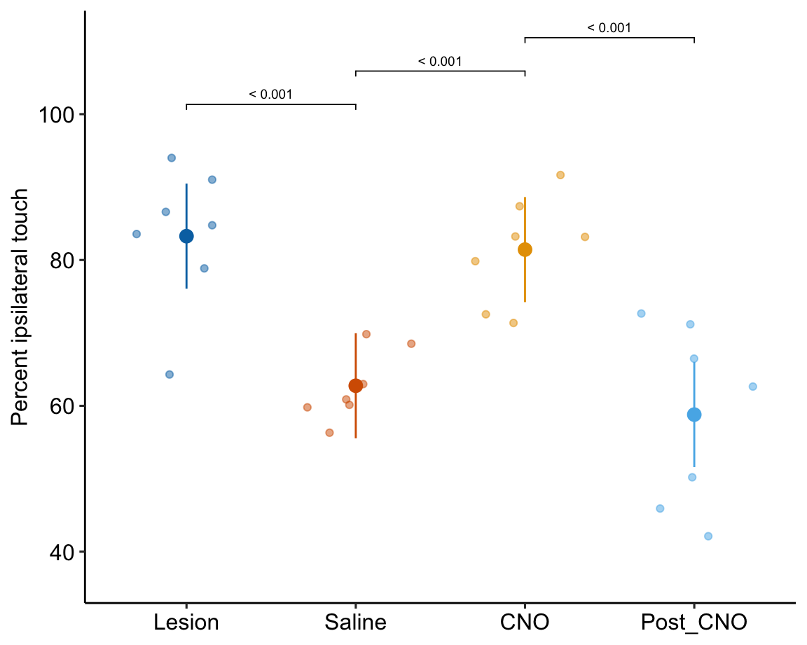
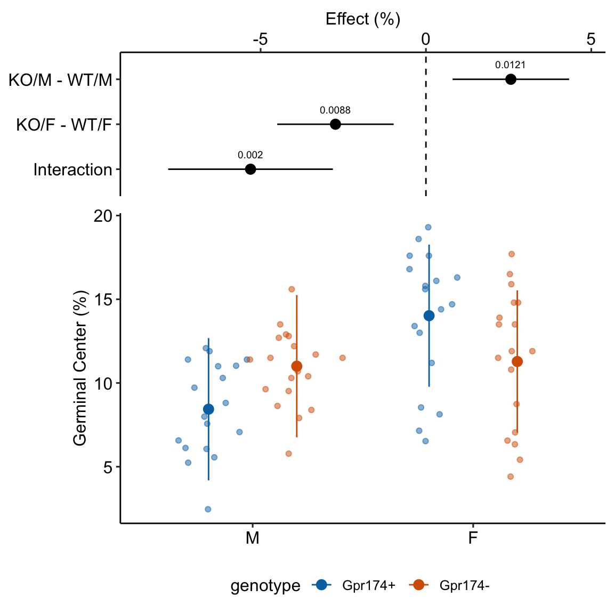

Chapter 18 Models with random factors – linear mixed models
This chapter is about linear models with added random factors, or linear mixed models. In classical hypothesis testing, a paired t-test, repeated measures ANOVA, and mixed-effect ANOVA are equivalent to specific cases of linear mixed models. Linear mixed models are for analyzing data composed of subsets – or batches – of data that were measured from the “same thing.” Batched data results in correlated error that muddles statistical inference unless the correlated error is modeled, explicitly or implicitly. In some designs, modeling the correlated error increases precision and power, and ultimately decreases false discovery. In other designs, failure to model the correlated error results in incorrectly high precision and incorrectly low p-values, leading to increased rates of false discovery. I think it’s fair to infer from the experimental biology literature, that experimental biologists don’t recognize the ubiquitousness of batched data and correlated error. This is probably the biggest issue in inference in the field (far more of an issue than say, a t-test on non-normal data).
What do I mean by “batch” and how can correlated error both increase and decrease false discovery? Consider these experiments:
- The experiment in Figure ?? is a factorial design with two factors, \(\texttt{genotype}\) and \(\texttt{treatment}\), each with two levels. One mice of each treatment combination is randomly assigned to a cage. There are five replicates of each cage. The five replicate mice per treatment combination are biological replicates. Each cage is a batch. Each cage has a unique set of factors that contribute to the error variance of the measure of the response. Each cage shares a cage-specific history of temperature, humidity, food, light, interactions with animal facilities staff and behavioral interactions among the mice. All response measures within a cage share the component of the error variance unique to that cage and, as a consequence, the error (residuals) within a cage are more similar to each other than they are to the residuals between cages.
- The experiment in Figure ?? is a factorial design with two factors, \(\texttt{genotype}\) and \(\texttt{treatment}\), each with two levels. One mice of each treatment combination is randomly assigned to a cage. There are five replicates of each cage. The researchers take three measures of the response variable per mouse. The three measures are subsampled replicates (most often referred to as subsamples). The subsamples could be technical replicates if multiple measures are taken from the same prep or repeated measures if the the multiple measures are taken at different time points. In addition to each cage being a batch, each mouse is a batch. Each mouse has a unique set of factors that contribute to the error variance of the measures of the response in that mouse. All response measures within a mouse share the component of the error variance unique to that mouse and, as a consequence, the error (residuals) within a mouse are more similar to each other than they are to the residuals between mice
- The experiment in Figure ?? has a single factor \(\texttt{treatment}\) with two levels. Importantly, the treatment (example: diet) is randomly assigned to cage and all mice in the cage have this treatment. The five mice per cage are subsampled replicates (subsamples). As in experiments 1 and 2, each cage is a batch. Each cage has a unique set of factors that contribute to the error variance of the measures of the response in that cage. All response measures within a cage share the component of the error variance unique to that cage and, as a consequence, the error (residuals) within a cage are more similar to each other than they are to the residuals among cages.
In each of these experiments, there is systematic variation at multiple levels: among treatments due to treatment effects and among batches due to batch effects. Batches come in lots of flavors, including experiment, cage, flask, plate, slide, donor, and individual. The among-batch variation is the random effect. An assumption of modeling random effects is that the batches are a random sample of the batches that could have been sampled. This is often not strictly true as batches are often convenience samples (example: the human donors of the Type 2 diabetes beta cells are those that were in the hospital).
The variation among batches/lack of independence within batches has different consequences on the uncertainty of the estimate of a treatment effect. The batches in Experiment 1 contain all treatment combinations. The researcher is interested in the treatment effect but not the variation due to differences among the batches. The batches are nuissance factors that add additional variance to the response, with the consequence that estimates of treatment effects are less precise, unless the variance due to the batches is explicitly modeled. Modeling a batch that contains some or all treatment combinations will increase precision and power.
Batches that contain at least two treatment combinations are known as blocks. A block that contains all treatment combinations is a complete block. A block that contains fewer than all combinations is an incomplete block. Including block structure in the design is known as blocking. Adding a blocking factor to a statistical model is used to increase the precision of an estimated treatment effect. Experiment 1 is an example of a randomized complete block design.
In Experiment 2, there are multiple measures per mouse and the design is a randomized complete block with subsampling. The subsampling is not the kind of replication that can be used to infer the among treatment effect because the treatment assignment was not at the level of the subsamples. The treatment replicates (the cage) are the blocks, because it was at this level that treatment assignment was randomized. Nevertheless, there are inference advantages to subsampling if modeled, But, a statistical analysis of all measures from a subsampled design without modeling the correlated error due to the subsampling is a kind of pseudoreplication. Pseudoreplication results in incorrectly small standard errors and p-values and increased rates of false discovery.
In Experiment 3, the treatment is randomized to batch, so each batch contains only a single treatment level. In these segregated experimental designs, the variation among batches that arises from non-treatment related differences among batches confounds the variation among batches due to a true treatment effect. An extreme example of this would be an experiment with only a single cage with control conditions and a single cage with treatment conditions. Imagine 1) the true effect of the treatment is zero and 2) an aggressive mouse in the control cage stimulates the stress response in the other mice and this stress response has a large effect on the value of the response variable measured by the researchers. The researcher is fooled into thinking that the treatment caused the difference in the response. Again, mice are subsampled replicates while treatment replicates are at the level of the cage, because it was at this level that treatment assignment was randomized. This means the researcher has a single, treatment replicate (or, \(n=1\)), regardless of the number of mice (subsamples) in each cage. A statistical analysis of all measures from a subsampled design without modeling the correlated error due to the subsampling is a kind of pseudoreplication. Pseudoreplication results in incorrectly small standard errors and p-values and increased rates of false discovery.
18.1 Example 1 – A random intercepts and slopes explainer (demo1)
To introduce linear mixed models, I’m using data from Experiment 1g below. The design is \(2 \times 2\) factorial with 4-5 mice per treatment combination. To simplify the explanation of random intercepts and random slopes in linear models with added random factors (linear mixed models), I flatten the analysis to a single treatment factor (\(\texttt{treatment}\)) with four levels (“Control,” “Tr1,” “Tr2,” "Tr3). The response is percent germinal centers (\(\texttt{gc}\)) in secondary lymphoid tissue. The experiment was replicated 4 times. Each replication is a batch. This batch information is in the variable \(\texttt{experiment_id}\). Further detail isn’t necessary at this point.
Figure 18.1A is a response plot of the linear model lm(gc ~ treatment) fit to the whole data set, ignoring the fact that the data were collected in batches. This is the complete pooling fit. Figure 18.1B is a response plot of the linear model lm(gc ~ treatment) fit to the means of each treatment combination from each experiment. This is the means pooling fit.
Figure 18.1: A. Response plot of the linear model gc ~ treatment fit to all exp1g data. B. Response plot of the linear model gc ~ treatment fit to the experiment means of the exp1g data.
18.1.1 Batched measurements result in clustered residuals
Figure 18.2A is a plot of the residuals of the complete-pooling fit against \(\texttt{experiment_id}\). The residuals are clustered by experiment. All residuals from experiment 1 are positive. All residuals from experiment 2 are negative. Residuals from experiment 3 are generally positive. Residuals from experiment 4 seem pretty random. This clustering by experiment is the same in the plot of the residuals of the means-pooling fit against \(\texttt{experiment_id}\) (Figure 18.2B). The residuals are not independent in either fit. If you asked me to guess the sign of a residual and gave me the information that the measure was from experiment 1, I’d be correct 100% of the time. If the residuals were independent, I’d be correct, on average, 50% of the time. Independent residuals are randomly scattered about zero for within each experiment (Figure 18.2C).

Figure 18.2: A. Residuals of the model fit to all demo1 data. B. Residuals of the model fit to the mean demo1 data.
18.1.2 Clustered residuals result in correlated error
An assumption of inference from a linear model is independence – each response is independently drawn from a distribution of random values. In Experiment 1g, the experiments are batches and the batched data results in correlated error unless modeled. One way to see this correlated error is to use the residuals from the means-pooled fit.
- aggregate the data by computing the means for each treatment level within each experiment.
- fit the fixed effect model (the model without added random factors) to the aggregated data
- compute the residuals from the model
- cast (or spread) the residuals for each treatment into its own column. This creates a 4 rows (experiment) \(\times\) 4 columns (treatments) matrix of residuals.
- Compute the correlations among the four treatment combination columns. This is the correlated error due to the batch effect of \(\texttt{experiment_id}\).
| experiment_id | Control | Tr1 | Tr2 | Tr3 |
|---|---|---|---|---|
| exp_1 | 2.578125 | 1.64075 | 2.2425 | 3.027125 |
| exp_2 | -2.229375 | -2.91625 | -5.7475 | -4.435375 |
| exp_3 | -0.615375 | 1.09975 | 3.4625 | 3.697125 |
| exp_4 | 0.266625 | 0.17575 | 0.0425 | -2.288875 |

I’ve used GGally::ggpairs to compute and display the correlations as a matrix. The lower triangle of matrix elements contains the scatterplot of the residuals for the treatment combination defined by the row and column headers. The upper triangle of elements contains the Pearson correlation. With only four experiment residuals per treatment combination, large correlations will be common. But all correlations are large, positive values. The asterisks indicate values that would be an unexpected surprise under a null model of no correlation.
We could explicitly model correlated error with a linear model for correlated error using the nlme::gls function, using a model for the correlated error that matches our knowledge of how the data were generated (from experiment batches). In this chapter, we implicitly model the correlated error using a linear model with added random factors – a linear mixed model. What we explicitly model in a linear mixed model is hierarchical levels of variance.
18.1.3 In blocked designs, clustered residuals adds a variance component that masks treatment effects
The variance among the experiments within a treatment is much greater than the variance among the treatment means. A consequence of this is, the experiment effect masks the effect of treatment. We can manually unmask this by
- compute the experiment means across all treatment combinations.
- create a gc variable without variation among experiment means (“adjusted for experiment_id”).
Figure 18.3: Adjusting for variance among experiments. The black, dashed line is the grand-mean response. In the left panel, the colored, dashed lines are the mean gc for each experiment, ignoring treatment. In the right panel, the individual values have been shifted (adjusted) by centering the experiment means. This has the effect of reducing the error variance – the spread of the values around the treatment means (large black dots).
In Figure 18.3, the black dots are the modeled means of each treatment combination. The small colored dots are the measured values of the response for each \(\texttt{experiment_id}\) in the left panel and the experiment-adjusted values in the right panel. The black, dashed line is the grand-mean response. The colored, dashed lines are the means of all responses in each experiment. These means are equal in the right panel (and covered by the black line) because the variation among the means has been adjusted away. What is left is error variation uncontaminated by \(\texttt{experiment_id}\).
In Experiment 1g, \(\texttt{experiment_id}\) is a nuissance variable – it adds to the noise. In the exercise above, the effects of the treatment variables are adjusted for the elevation of batch effects on the overal batch mean. Linear mixed models are more sophisticated than this. In a linear mixed model, the effects of the treatment variables are adjusted for the elevations of batch effects on the intercept and batch effects on the slopes (or some combination of these). These are the random intercepts and random slopes.
18.1.4 Linear mixed models are linear models with added random factors
A linear model adds some combination of random intercepts and random slopes to a linear model.
\[ \begin{equation} \texttt{gc}_{jk} = (\beta_{0} + \gamma_{0j}) + (\beta_{k} + \gamma_{kj}) \texttt{treatment}_{k} + \varepsilon \tag{18.1} \end{equation} \]
A random intercept for experiment j is the sum of the fixed intercept (\(\beta_0\)) and a random intercept effect (\(\gamma_{0j}\)). I’ve embedded these within parentheses to show how these combine into the random intercept. A random slope for batch j is the sum of the fixed slope (\(\beta_k\)) for the non-reference level \(k\) and a random slope effect (\(\gamma_{kj}\)). I’ve embedded these within parentheses to show how these combine into the random slopes.
There is a different \(\gamma_{0j}\) for each experiment. There is a different \(\gamma_{kj}\) for each combination of non-reference level and experiment. The \(\gamma_0j\) and \(\gamma_kj\) are modeled as if the values for each experiment is a random draw from an infinite number of experiments. This is why \(\gamma_{0j}\) and \(\gamma_{kj}\) are random effects. In contrast, \(\beta_0\) and the three \(\beta_k\) for the non-reference treatment levels are the same for all experiments – this is why \(\beta_0\) is known as fixed effects (technically, \(\beta_0\) is a mean and not an effect).
Model (18.1) is fit to the Example 1 data using lme4::lmer()
demo1_m1 <- lmer(gc ~ treatment +
(treatment | experiment_id),
data = demo1)Notes
(treatment | experiment_id)specifies a random intercept for all levels of \(\textt{experiment_id}\) and a random slope for all combinations the levels of \(\textt{experiment_id}\) and the non-reference levels of \(\textt{treatment}\)
18.1.5 What the random effects are
Random intercepts model batch effects in the reference treatment level. 18.4A illustrates random intercepts and random intercept effects. The large, colored dots are the modeled means of each experiment for each treatment combination. For the reference treatment level (“Control”), each mean is the sum of the estimated fixed intercept (\(b_0\)), shown by the dashed gray line, and the estimated random intercept effect (\(\g_{0j}\)) for experiment j. The random intercept effects are the vertical, colored lines.
Random slopes model the effect of treatment on batch effects in the non-reference treatment levels. 18.4B illustrates random slopes and random slope effects, focusing on the slopes for the 2nd non-reference treatment level (“Tr2”). The angled black line is the estimated fixed slope \(b_2\) for this level. The colored lines are the random slopes for each experiment. The pale, gray dots are where the modeled means at the Tr2 level would be if there were no random slope effect – as if we took the large colored dots at “Control” and rigidly shifted them up the black line to “Tr2.” The estimated random slope effects \(\mathrm{g}_{2j}\) are the difference between these large, gray dots and the modeled means.
![What random intercepts and slopes are. (A) A random intercept for batch $j$ is the difference between the fixed intercept and the modeled mean for batch $j$ in the reference treatment level. The random intercepts for experiments 1 ($\mathrm{g}_{0.1}$) and 2 ($\mathrm{g}_{0.2}$) are shown with brackets. (B) The fixed slope for the "Tr2" is illustrated with a bracket. The large, grey dots are the expected values for each batch (experiment_id) in the "Tr2" treatment if the random slope effects are zero. A random slope for batch $j$ is the difference between the expected value for batch j and the modeled mean for batch $j$. The random slope for experiment 2 in "Tr2" ($\mathrm{g}_{2.2}$) is shown with a bracket.](Walker-elementary-statistical-modeling-draft_files/figure-html/lmm-demo1-explainer-2c-1.png)
Figure 18.4: What random intercepts and slopes are. (A) A random intercept for batch \(j\) is the difference between the fixed intercept and the modeled mean for batch \(j\) in the reference treatment level. The random intercepts for experiments 1 (\(\mathrm{g}_{0.1}\)) and 2 (\(\mathrm{g}_{0.2}\)) are shown with brackets. (B) The fixed slope for the “Tr2” is illustrated with a bracket. The large, grey dots are the expected values for each batch (experiment_id) in the “Tr2” treatment if the random slope effects are zero. A random slope for batch \(j\) is the difference between the expected value for batch j and the modeled mean for batch \(j\). The random slope for experiment 2 in “Tr2” (\(\mathrm{g}_{2.2}\)) is shown with a bracket.
18.1.6 In a blocked design, a linear model with added random effects increases precision of treatment effects
\[ \begin{equation} \texttt{gc}_{jk} = \beta_{0} + \beta_{k} \texttt{treatment}_{k} + (\gamma_{0j} + \gamma_{kj}\texttt{treatment}_{k} + \varepsilon) \tag{18.2} \end{equation} \]
If the random intercepts and random slopes aren’t modeled, this among-experiment variance is shifted to the error variance because the intercept effects and slope effects aren’t estimated but absorbed by the error – everything in Model (18.2) will be estimated by the residuals. As a consequence, the estimate of \(\sigma\) (the square root of the error variance) for the linear mixed model is smaller than that for the linear model with only fixed effects.
# sigma for the lmm
m1 <- lmer(gc ~ treatment +
(treatment | experiment_id),
data = demo1)
summary(m1)$sigma## [1] 1.931339# sigma for the fixed lm
m2 <- lm(gc ~ treatment,
data = demo1)
summary(m2)$sigma## [1] 3.376402The consequence of the smaller estimate of \(\sigma\) in the linear mixed model on inference (confidence intervals and p-values) depends on the number of subsamples, the variance of the random effects relative to the variance of the residual error, and the correlation among the random effects.
18.1.7 The correlation among random intercepts and slopes
Again, here is the linear mixed model fit to the experiment 1g data.
\[ \begin{equation} \texttt{gc}_{jk} = (\beta_{0} + \gamma_{0j}) + (\beta_{k} + \gamma_{kj}) \texttt{treatment}_{k} + \varepsilon \end{equation} \]
Think about how this model generates data. We have four experiments, so we randomly draw four \(\gamma_{0j}\) from a normal distribution with some variance \(\sigma_{0}^2\). And, for each non-reference treatment, we randomly draw four \(\gamma_{0k}\) from a normal distribution with some variance \(\sigma_{k}^2\). This gives us a matrix of four columns (one random intercept and three random slopes) and four rows (four experiments).
| intercept | slope 1 | slope 2 | slope 3 |
|---|---|---|---|
| \(\gamma_{0.1}\) | \(\gamma_{1.1}\) | \(\gamma_{2.1}\) | \(\gamma_{3.1}\) |
| \(\gamma_{0.2}\) | \(\gamma_{1.2}\) | \(\gamma_{2.2}\) | \(\gamma_{3.2}\) |
| \(\gamma_{0.3}\) | \(\gamma_{1.3}\) | \(\gamma_{2.3}\) | \(\gamma_{3.3}\) |
| \(\gamma_{0.4}\) | \(\gamma_{1.4}\) | \(\gamma_{2.4}\) | \(\gamma_{3.4}\) |
To randomly sample these values, the model needs not only the variances (\(\sigma_k^2\)) for each column (random effect) but also a correlation for each pair of columns. These correlations are the off-diagonal elements of the correlation matrix of random effects.
| 1 | COR(\(\gamma_{0}\), \(\gamma_{1}\)) | COR(\(\gamma_{0}\), \(\gamma_{2}\)) | COR(\(\gamma_{0}\), \(\gamma_{3}\)) |
| COR(\(\gamma_{1}\), \(\gamma_{0}\)) | 1 | COR(\(\gamma_{1}\), \(\gamma_{2}\)) | COR(\(\gamma_{1}\), \(\gamma_{3}\)) |
| COR(\(\gamma_{2}\), \(\gamma_{0}\)) | COR(\(\gamma_{2}\), \(\gamma_{1}\)) | 1 | COR(\(\gamma_{2}\), \(\gamma_{3}\)) |
| COR(\(\gamma_{3}\), \(\gamma_{0}\)) | COR(\(\gamma_{3}\), \(\gamma_{1}\)) | COR(\(\gamma_{3}\), \(\gamma_{2}\)) | 1 |
In the models fit in this text, a researcher doesn’t specify these variances and correlations. Instead, these are parameters estimated by the model. Here is a summary of the estimates of the variances of the random effects and of the correlations among the random effects for the linear mixed model fit to the experiment 1g data.
## Groups Name Std.Dev. Corr
## experiment_id (Intercept) 1.7710
## treatmentTr1 0.9642 -0.025
## treatmentTr2 2.9026 0.458 0.876
## treatmentTr3 2.9910 0.300 0.879 0.938
## Residual 1.9313The first four values in the column “Std.Dev.” are the square roots of the estimated variances for the random effects given in the column “Name.” The last value in column “Std.Dev.” is the square roots of the estimate of \(\sigma^2\) (the error variance). The (lower) triangular matrix of values under “Corr” are the estimates of the correlations among the random effects. The variance of the random effects and the correlation among the random effects creates the correlated error described above but do not confuse these different correlations (this is easy to confuse, you are not alone).
A compact way to view these variances and correlations is a matrix with the random effect standard deviations on the diagonal and the correlations on the off-diagonal. I’ll refer to this as the VarCorr matrix after the lme4 function used to get the values.
| (Intercept) | 1.77 | |||
| treatmentTr1 | -0.03 | 0.96 | ||
| treatmentTr2 | 0.46 | 0.88 | 2.90 | |
| treatmentTr3 | 0.30 | 0.88 | 0.94 | 2.99 |
It’s probably not worth trying to understand the experimental reason underneath the correlations among the random effects. But, researchers might want to sleuth out why a lab is getting high random intercept and slope variances, relative to the error variances, as these could indicate potential sources of improvement in lab protocols.
18.1.8 Clustered residuals create heterogeneity among treatments
The variances of the four treatments are
| treatment | Var |
|---|---|
| Control | 7.8 |
| Tr1 | 5.2 |
| Tr2 | 16.2 |
| Tr3 | 16.7 |
In chapter xxx, I stated that heterogeneity of variances can arise because of clustered data. Why does clustered data generate heterogeneity? Let’s keep peeking at the linear mixed model fit to the experiment 1g data.
\[ \begin{equation} \texttt{gc}_{jk} = (\beta_{0} + \gamma_{0j}) + (\beta_{k} + \gamma_{kj}) \texttt{treatment}_{k} + \varepsilon \end{equation} \]
In a linear model with fixed effects only, the expected variance for any treatment for any treatment is \(\sigma^2\). But if the data are batched, the expected variances include components due to the batch and these batch components depend on the treatment. This creates heterogeneity.
To understand this, first some rules of expected variance. The random variable \(\texttt{C}\) is the sum of two random variables \(\texttt{A}\) and \(\texttt{B}\). The variances of these variables are \(\sigma_{C}^2\), \(\sigma_{A}^2\), and \(\sigma_{B}^2\).
- The expected variance of \(\texttt{C}\) if \(\texttt{A}\) and \(\texttt{B}\) are independent (uncorrelated) is \(\sigma_{C}^2 = \sigma_{A}^2 + \sigma_{B}^2\) (this equation should look familiar).
- The expected variance of \(\texttt{C}\) if \(\texttt{A}\) and \(\texttt{B}\) are not independent (correlated) is \(\sigma_{C}^2 = \sigma_{A}^2 + \sigma_{B}^2 + 2\sigma_{A}\ \sigma_{B}\ \rho_{A,B}\) where \(\rho_{A,B}\) is the expected correlation between \(\texttt{A}\) and \(\texttt{B}\) (this equation might also look familiar).
Here is some code to better know expected variances of the sum of two correlated random variables.
# copy, paste, and explore
n <- 10^4
rho <- 0.6 # change this to any value between -1 and 1
b <- sqrt(abs(rho))
z <- rnorm(n)
A <- b*z + sqrt(1-b^2)*rnorm(n)
B <- sign(rho)*b*z + sqrt(1-b^2)*rnorm(n)
cor(A,B) # should be close to rho
C <- A + B
sd(A)^2 # should be close to 1
sd(B)^2 # should be close to 1
sd(C)^2 # should be close to 1^2 + 1^2 + 2*1*1*rho
sd(A)^2 + sd(B)^2 + 2*sd(A)*sd(B)*cor(A,B) # should equal previous lineUsing these rules and the standard deviations of the random effects given above we can computed the expected variances of the treatment groups given the fit model.
- For the variance of the reference (“Control”) group, we need to add to \(\sigma^2\) the variance of the random intercept using rule #1 (the residuals are not correlated with random intercepts or slopes). The modeled variance is a less than the actual variance of the Control group.
summary(m1)$sigma^2 + 1.7710^2## [1] 6.866512- For the variance of a non-reference group, we need to add to \(\sigma^2\) the variance of the random intercept and the variance of the random slope for the treatment and the component due to the correlation between the random slope for the treatment and the random intercept. For Tr2, this is
# error + intercept + slope + cor(intercept, slope)
(summary(m1)$sigma^2) + (1.7710^2) + (2.9026^2) + (2 * 1.7710 * 2.9026 * 0.458)## [1] 20.0003which is a bit higher than the measured variance.
18.1.9 Linear mixed models are flexible
One more look at the linear mixed model fit to the experiment 1g data.
\[ \begin{equation} \texttt{gc}_{jk} = (\beta_{0} + \gamma_{0j}) + (\beta_{k} + \gamma_{kj}) \texttt{treatment}_{k} + \varepsilon \end{equation} \]
The linear mixed model specifies both a random intercept and a random slope but a researcher might limit the model to the random intercept only, or less commonly, the random slope only. Or a researcher might replace the random slope with a second random intercept that captures variance in the batch by treatment combinations like a random slope. Or a researcher might model the structure (correlated error and heterogeneity of variances) in the residuals in addition to adding random factors to the model.
18.1.10 A random intercept only model
demo1_m2 <- lmer(gc ~ treatment +
(1 | experiment_id),
data = demo1)Notes
- Model
demo1_m2specifies only a random intercept for each of the levels of \(\texttt{experiment_id}\). The exclusion of the random slopes ia a kind of model simplification. - In experiments without subsampling, random slopes cannot be added to the model because there is no variation with a treatment by batch combination.
- In experiments with subsampling, a researcher might exclude a random slope term for several reasons, including
- it is the culture in many subfields to only include a random intercept (no, this is not a good reason)
- the computation of the model fit returned a convergence warning
- model comparison suggested that a model with the random slope was too complex given the data. A useful statistic for comparing models with different random effects specifications is the AIC, which is introduced in Section 18.1.12 below.
18.1.11 A model including an interaction intercept
demo1_m3 <- lmer(gc ~ treatment +
(1 | experiment_id) +
(1 | experiment_id:treatment),
data = demo1)Notes
(1 | experiment_id:treatment)models a random intercept for all combinations of the levels of \(\texttt{experiment_id}\) and \(\texttt{treatment}\). This interaction intercept is an alternative to a random slope for modeling treatment-specific batch effects.
18.1.12 AIC and model selection – which model to report?
Three different linear mixed models were fit to the Example 1 data: demo1_m1, demo1_m2, and demo1_m3. Which model do we report? A useful stastistic for this decision is a statistic known as the AIC.
| Model | AIC |
|---|---|
| demo1_m1 | 344.1529 |
| demo1_m2 | 344.0765 |
| demo1_m3 | 337.5332 |
Notes
- AIC (Akaike Information Criterion) is a relative measure of model quality. Compare this to \(R^2\), which is an absolute measure of goodness of fit. The AIC formula has two parts, one is a kind of goodness of fit (like \(R^2\)) and the other is a penalty based on the number of parameters in the model. As the goodness of fit increases, the AIC goes down. As the number of parameters increases, the AIC goes up. The model with the lowest AIC is the highest quality model. The actual value of AIC, unlike \(R^2\), does not have any absolute meaning; it is only meaningful relative to the AICs computed from fits to different models to the same data.
- The AIC of the three models suggests that we report Model
demo1_m3.
18.1.13 The specification of random effects matters
Inference will often be very different between these two models as they make very different
| contrast | estimate | SE | df | lower.CL | upper.CL | t.ratio | p.value |
|---|---|---|---|---|---|---|---|
| intercepts + slopes (m1) | |||||||
| Tr1 - Control | 2.54 | 0.804 | 2.978 | -0.03 | 5.11 | 3.16 | 0.05150 |
| Tr2 - Control | 5.61 | 1.591 | 2.997 | 0.54 | 10.67 | 3.52 | 0.03885 |
| Tr3 - Control | 2.85 | 1.631 | 2.997 | -2.35 | 8.04 | 1.74 | 0.17949 |
| intercepts only (m2) | |||||||
| Tr1 - Control | 2.64 | 0.755 | 66.005 | 1.13 | 4.15 | 3.49 | 0.00086 |
| Tr2 - Control | 5.65 | 0.766 | 66.014 | 4.12 | 7.18 | 7.38 | 0.00000 |
| Tr3 - Control | 2.94 | 0.765 | 66.000 | 1.41 | 4.47 | 3.85 | 0.00027 |
| intercept + interaction intercept (m3) | |||||||
| Tr1 - Control | 2.54 | 1.214 | 8.912 | -0.21 | 5.29 | 2.09 | 0.06616 |
| Tr2 - Control | 5.60 | 1.219 | 9.061 | 2.84 | 8.35 | 4.59 | 0.00128 |
| Tr3 - Control | 2.87 | 1.219 | 9.052 | 0.12 | 5.63 | 2.36 | 0.04269 |
Notes
- Inference from the intercept only model (
demo1_m2) is almost certainly too optimistic based on simulations that show that intercept only models can be highly anti-conservative (too narrow confidence intervals and too small p-values). - Humans have evolved to make up rational explanations – do not convince yourself that the model with the smallest p-values is the scientifically most rational model.
18.1.14 Mixed Effect and Repeated Measures ANOVA
Two-way mixed-effect ANOVA (some fields would call this a repeated measures ANOVA) is equivalent to Model demo1_m3 in this case. More generally, the two are equal in balanced designs – the same number of subsamples in all treatment x batch combinations.
demo1_m4 <- aov_4(gc ~ treatment +
(treatment | experiment_id),
data = demo1)Notes
1. The function afex::aov4 is used for specifying ANOVA models that are special cases of linear mixed models.
2. The model formula in Model demo1_m2 looks exactly like that the random intercepts and slopes model (Model demo1_m1) but these are not the same.
3. One can use either a univariate or multivariate model for mixed or repeated measures ANOVA – see section 18.2.11.
| contrast | estimate | SE | df | lower.CL | upper.CL | t.ratio | p.value |
|---|---|---|---|---|---|---|---|
| Tr1 - Control | 2.50 | 1.193 | 9 | -0.19 | 5.20 | 2.10 | 0.06521 |
| Tr2 - Control | 5.58 | 1.193 | 9 | 2.88 | 8.28 | 4.67 | 0.00116 |
| Tr3 - Control | 2.84 | 1.193 | 9 | 0.14 | 5.54 | 2.38 | 0.04103 |
18.1.15 Pseudoreplication
18.2 Example 2 – experiments without subsampling replication (exp6g)
This example introduces linear mixed models for batches that contain all treatment levels of a single factor but no subsampling replication. In this example, the batch is the individual mouse (\(\texttt{mouse_id}\)). There are four measures of the response variable on each mouse, one measure per treatment level. When there is no subsampling replication, we cannot add a random slope to the model because there is only a single observation at each treatment level and a slope would fit the point at the reference level and the point at the non-reference level perfectly. However, we can explicitly model variation in the correlated error and heterogeneity in the variances among treatments as an alternative to modeling a random slope.
Reversing a model of Parkinson’s disease with in situ converted nigral neurons
Source figure: Fig. 6g
Source data: Source Data Fig. 6
18.2.1 Understand the data
In this study, the researchers investigate the effectiveness of knocking down the protein PTBP1 to induce astrocytes to convert to neurons in a motor processing region of the brain. Experimental lesions of this region of the brain is a model of Parkinson’s disease. In Experiment 6g, the researchers
- Generated a lesion in the motor processing region using 6-hydroxydopamine (6-OHDA). The lesion disrupts the ability to control the contralateral (opposite side) forelimb.
- One month after the lesion, measured the percent of ipsilateral (same side) forepaw touches (the forelimb extending out and touching the surface) in a test of exploration in a new environment (the “cylinder test”). The expected percent in an intact mouse is 50%. In a lesioned mouse, the percent should be much greater than 50% since there is less control of the contralateral limb. The measure at this point is in the treatment “Lesion.” This is the positive control.
- Converted astrocytes in the lesion to functional neurons by knocking down PTBP1.
- Two months after knockdown, gave the mouse saline and remeasured percent ipsilateral touches in a cylinder test. If the knockdown worked as expected, there should be closer to 50% ipsilateral touches. The measure at this point is in the treatment “Saline.” The comparison with Lesion is a focal test.
- Inhibited neuron action in the converted neurons using clozapine-N-oxide (CNO), which suppresses neuron electrical activity. Then, remeasured percent ipsilateral touches in a cylinder test. If the CNO worked as expected, there should be much greater than 50% ipsilateral touches since there should be re-loss of control of the contralateral limb. The measure at this point is in the treatment “CNO.” The comparison with Saline is a focal test.
- Allowed three days for the CNO to degrade, then, remeasured percent ipsilateral touches in a cylinder test. If the CNO degraded as expected, the converted neurons should be functional and there should be closer to 50% ipsilateral touches. The measure at this point is in the treatment “Post_CNO.” The comparison with CNO is a focal test.
The design is \(4 \times 1\) – a single treatment with four levels (“Lesion,” “Saline,” “CNO,” “Post_CNO”)
The planned contrasts are
- Saline - Lesion. This measures the effect of the knockdown and conversion of astrocytes to functional neurons.
- CNO - Saline. This measures the effect of inhibiting the converted neurons to test if it was these and not some other neurons that account for the effect in contrast 1.
- Post_CNO - CNO. This is probing the same expectation as contrast 2.
18.2.2 Model fit and inference
18.2.2.1 Fit the model
exp6g_m1a <- lmer(touch ~ treatment + (1|mouse_id), data = exp6g)
# alt model
exp6g_m1b <- lme(touch ~ treatment,
random = ~1|mouse_id,
correlation = corSymm(form = ~ 1 | mouse_id),
weights = varIdent(form = ~ 1 | treatment),
data = exp6g)
AIC(exp6g_m1a, exp6g_m1b)## df AIC
## exp6g_m1a 6 191.3367
## exp6g_m1b 15 198.3888# report model a
exp6g_m1 <- exp6g_m1aexp6g_m1b overparameterizes, report exp6g_m1a (see Alternative models for exp6g below)
18.2.2.2 Inference from the model
exp6g_m1_coef <- cbind(coef(summary(exp6g_m1)),
confint(exp6g_m1)[-c(1:2),])
# exp5c_m1_coef %>%
# kable(digits = c(2,3,1,1,4,2,2)) %>%
# kable_styling()exp6g_m1_emm <- emmeans(exp6g_m1, specs = c("treatment"))| treatment | emmean | SE | df | lower.CL | upper.CL |
|---|---|---|---|---|---|
| Lesion | 83.3 | 3.44 | 18.9 | 76.1 | 90.47 |
| Saline | 62.8 | 3.44 | 18.9 | 55.5 | 69.96 |
| CNO | 81.4 | 3.44 | 18.9 | 74.2 | 88.63 |
| Post_CNO | 58.8 | 3.44 | 18.9 | 51.6 | 66.00 |
# exp6g_m1_emm # print in console to get row numbers
# set the mean as the row number from the emmeans table
lesion <- c(1,0,0,0)
saline <- c(0,1,0,0)
cno <- c(0,0,1,0)
post_cno <- c(0,0,0,1)
exp6g_m1_planned <- contrast(exp6g_m1_emm,
method = list(
"Saline - Lesion" = c(saline - lesion),
"CNO - Saline" = c(cno - saline),
"Post_CNO - CNO" = c(post_cno - cno)
),
adjust = "none"
) %>%
summary(infer = TRUE)| contrast | estimate | SE | df | lower.CL | upper.CL | t.ratio | p.value |
|---|---|---|---|---|---|---|---|
| Saline - Lesion | -20.52 | 4.071 | 18 | -29.07 | -11.96 | -5.04 | 0.00009 |
| CNO - Saline | 18.67 | 4.071 | 18 | 10.12 | 27.23 | 4.59 | 0.00023 |
| Post_CNO - CNO | -22.63 | 4.071 | 18 | -31.18 | -14.08 | -5.56 | 0.00003 |
18.2.2.3 Plot the model
ggplot_the_model(exp6g_m1,
exp6g_m1_emm,
exp6g_m1_planned,
y_label = "Percent ipsilateral touch",
effect_label = "Difference in % ipsilateral touch",
palette = pal_okabe_ito_blue,
rel_heights = c(0.5,1))18.2.2.4 Alternaplot the model
gg <- ggplot_the_response(exp6g_m1,
exp6g_m1_emm,
exp6g_m1_planned,
dots = "jitter",
y_label = "Percent ipsilateral touch",
palette = pal_okabe_ito_blue) +
# geom_line(aes(group = mouse_id),
# position = position_jitter(seed = 1),
# color = "gray") +
NULL
gg
18.2.3 The model exp6g_m1 adds a random intercept but not a random slope
The model fit to the exp6g data is
\[ \begin{equation} \texttt{touch}_{jk} = (\beta_{0} + \gamma_{0j}) + (\beta_{k} + \gamma_{jk}) \texttt{treatment}_{k} + \varepsilon \end{equation} \]
Notes
- Again, in experiments without subsampling, we cannot add a random slope to the model (for each mouse, there is a single observation at each treatment level so a slope would fit the two points perfectly).
18.2.4 The fixed effect coefficients of model exp6g_m1
The fixed effect coefficients of model exp6g_m1 are
| Estimate | Std. Error | df | t value | Pr(>|t|) | 2.5 % | 97.5 % | |
|---|---|---|---|---|---|---|---|
| (Intercept) | 83.27 | 3.441 | 18.9 | 24.20 | 0.0000 | 76.72 | 89.81 |
| treatmentSaline | -20.52 | 4.071 | 18.0 | -5.04 | 0.0001 | -28.25 | -12.78 |
| treatmentCNO | -1.84 | 4.071 | 18.0 | -0.45 | 0.6565 | -9.58 | 5.90 |
| treatmentPost_CNO | -24.47 | 4.071 | 18.0 | -6.01 | 0.0000 | -32.21 | -16.73 |
Notes
- The interpretation of the fixed effectcs coefficients have the usual interpretation (see The coefficients of a linear model using dummy coding have a useful interpretation). Figure 18.5 is a reminder.
Figure 18.5: Fixed effects estimated by exp6g_m1. \(b_0\) is the modeled mean of the Lesian treatment. \(b_1\) is the difference (Saline - Lesian). \(b_2\) is the difference (CNO - Lesian). \(b_3\) is the difference (Post_CNO - Lesian).
18.2.5 The random intercept coefficients of exp6g_m1
| mouse_id | random intercept | b_0 | g_0j |
|---|---|---|---|
| mouse_1 | 82.874 | 83.268 | -0.393 |
| mouse_2 | 83.640 | 83.268 | 0.372 |
| mouse_3 | 77.499 | 83.268 | -5.769 |
| mouse_4 | 79.943 | 83.268 | -3.325 |
| mouse_5 | 89.286 | 83.268 | 6.018 |
| mouse_6 | 82.732 | 83.268 | -0.536 |
| mouse_7 | 86.901 | 83.268 | 3.633 |
Notes
- The random intercept effect \(g_{0j}\) is the difference between the modeled mean for mouse j and the mean of the reference treatment. Unlike the fixed intercept (\(b_0\)), \(g_{0j}\) is an effect.
- Figure ?? illustrates the random intercept coefficients \(g_{0j}\) for model
exp6g_m1. - The random intercept coefficients are often (but not always) treated as a source of nuisance variation – that is, the coefficients are not generally of interest and the values are not typically reported.
![Random intercept effects for model exp6g_m1. The pale, colored dots are the measured percent ipsilateral touch values for each mouse for each treatment. The dashed, gray lines are the modeled means for each treatment. The dashed grey line for the reference level ("Lesion") is the fixed intercept. The dark, colored dots at the reference level are the random intercepts. The value of each random intercept is the sum of the fixed intercept and the random intercept effect for that mouse. The vertical, colored line segments at the reference level are the random intercept effects $g_{0j}$. The length of the segment is the residual from the dashed, gray line to the pale dot. The random intercept effects for mice 1 and 2 are too short to see.](Walker-elementary-statistical-modeling-draft_files/figure-html/lmm-exp6g-explainer-2-1.png)
Figure 18.6: Random intercept effects for model exp6g_m1. The pale, colored dots are the measured percent ipsilateral touch values for each mouse for each treatment. The dashed, gray lines are the modeled means for each treatment. The dashed grey line for the reference level (“Lesion”) is the fixed intercept. The dark, colored dots at the reference level are the random intercepts. The value of each random intercept is the sum of the fixed intercept and the random intercept effect for that mouse. The vertical, colored line segments at the reference level are the random intercept effects \(g_{0j}\). The length of the segment is the residual from the dashed, gray line to the pale dot. The random intercept effects for mice 1 and 2 are too short to see.
18.2.6 The random and residual variance and the intraclass correlation of model exp6g_m1
## Groups Name Std.Dev.
## mouse_id (Intercept) 4.9882
## Residual 7.6155Notes
- The first element in “Std.Dev.” is the estimate of \(\sqrt{\sigma^2_{0j}}\), the standard deviation among the donors due to the random effect of \(\texttt{mouse_id}\).
- The second element in “Std.Dev.” is \(\sqrt{\sigma^2_{0}}\), the estimate of the standard deviation of the error variance (\(\varepsilon^2\)). Remember that the residuals of the model are the estimates of \(\varepsilon\).
- The ratio \(\frac{\sigma^2_{0j}}{\sigma^2_{0j} + \sigma^2_{0}}\) (the ratio of the among-block variance to total random variance) is known as the intraclass correlation. This correlation is an estimate of the correlated error due to the by-mouse clustering if the model were fit without the added random intercept. For
exp6g_m1, this correlation is 0.3. - The intraclass correlation ranges between 0 and 1 and makes a pretty good qualitative indicator of repeatability.
18.2.7 The linear mixed model exp6g_m1 increases precision of treatment effects, relative to a fixed effects model
Let’s compare the effects estimated by the linear mixed model exp6g_m1 with a linear model that ignores donor (a fixed effects model).
exp6g_m2 <- lm(touch ~ treatment, data = exp6g)Figure 18.7: A. Inference from a linear mixed model with blocking factor (mouse_id) added as a random intercept. B. Inference from a fixed effects model.
Figure 18.7A is a plot of the effects from the linear mixed model exp6g_m1 that models the added variance due to mouse. Figure 18.7B is a plot of the effects from the fixed effect model exp6g_m2 that ignores the added variance due to mouse. The 95% confidence intervals of the treatment effects in model exp6g_m1 are slightly smaller than those in model exp6g_m2. Adding \(\texttt{mouse_id}\) as a random factor to the linear model increases the precision of the estimate of the treatment effects by eliminating the among-mouse component of variance from the error variance.
The error variance (the estimate of $^2) in the linear mixed model and the fixed effects model is
summary(exp6g_m1)$sigma^2## [1] 57.99549summary(exp6g_m2)$sigma^2## [1] 82.8777The error variance is 43% higher in the fixed effects model. In the linear mixed model, the variance lost from the error was shifted to the random intercept. We can track this shift with the table of the two variance components of the linear mixed model, shown above, and here again (the values are the square roots of the variances).
VarCorr(exp6g_m1)## Groups Name Std.Dev.
## mouse_id (Intercept) 4.9882
## Residual 7.6155The sum of the two variance components of the linear mixed model is equal to the error variance of the fixed effects model:
sum(as.data.frame(VarCorr(exp6g_m1))$vcov)## [1] 82.877718.2.8 Alternative models for exp6g
Linear mixed models are very flexible, a topic which is too advanced for this text. Here I want to focus on an alternative model because of its relevance to repeated measures ANOVA.
exp6g_m1a <- lmer(touch ~ treatment + (1 | mouse_id),
data = exp6g)
exp6g_m1b <- lme(touch ~ treatment,
random = ~1|mouse_id,
correlation = corSymm(form = ~ 1 | mouse_id),
weights = varIdent(form = ~ 1 | treatment),
data = exp6g)Notes
- Two models are fit. The two models have the same fixed effect but differ in how they model the random effect and the pattern of correlations in the residuals. The difference in specification determines the error variance and degrees of freedom for computing uncertainty. I’ll return to inference and the problem of “which model to choose” in a moment. First, how do these models differ?
- Model
exp6g_m1ais the same model analyzed and explained above. This model specifies a random intercept for each level of \(\texttt{mouse_id}\). - Model
exp6g_m1bhas the same random effects asexp6g_m1abut adds two additional arguments, acorrelationargument that explicitly models correlated error in the residuals and aweightsargument that models heterogeneity in the residuals. - Consider the error (the residuals) of the fixed effect model
touch ~ treatmentcast into a matrix with the residuals for each treatment in its own column. This matrix of residuals will be a \(7 \times 4\) (7 mice, 4 treatments) matrix that looks like the table of residuals in Example 1 (Table 18.1). - Model
exp6g_m1aimplicitly models compound symmetric correlated error. This means
- the correlation between every pair of columns of the residual matrix is the same.
- the variances of each of the columns of the residual matrix is the same.
- Model
exp6g_m1aassumes zero correlation among the columns of a residual matrix from Model exp6g_m1a. This is because the source of the correlated residuals from the fixed model has been modeled by the random intercept.
- Model
exp6g_m1bdoes not assume compound symmetric correlated error.
- the argument
correlation = corSymm(form = ~ 1 | mouse_id)in modelexp6g_m1bexplicitly models different correlations for all pairs of treatment combinations – that is, unstructured correlated error. - the argument
weights = varIdent(form = ~ 1 | treatment)in modelexp6g_m1bexplicitly models heterogeneity in the residuals among the levels of $.
- Model
exp6g_m1bmakes fewer assumptions for inference. The trade-off is the estimation of more parameters and the potential of overfitting. - A univariate model of a repeated measures ANOVA fit to the
exp6gdata is equivalent to modelexp6g_m1a. See section 18.2.10. - A multivariate model of a repeated measures ANOVA fit to the
exp6gdata is equivalent to modelexp6g_m1b. See section 18.2.11.
| contrast | estimate | SE | df | lower.CL | upper.CL | t.ratio | p.value |
|---|---|---|---|---|---|---|---|
| exp6g_m1a | |||||||
| Saline - Lesion | -20.52 | 4.071 | 18 | -29.07 | -11.96 | -5.04 | 0.000085 |
| CNO - Saline | 18.67 | 4.071 | 18 | 10.12 | 27.23 | 4.59 | 0.000228 |
| Post_CNO - CNO | -22.63 | 4.071 | 18 | -31.18 | -14.08 | -5.56 | 0.000028 |
| exp6g_m1b | |||||||
| Saline - Lesion | -20.52 | 3.172 | 18 | -27.18 | -13.85 | -6.47 | 0.000004 |
| CNO - Saline | 18.67 | 3.057 | 18 | 12.25 | 25.10 | 6.11 | 0.000009 |
| Post_CNO - CNO | -22.63 | 5.610 | 18 | -34.42 | -10.84 | -4.03 | 0.000779 |
- Planned comparisons of the two models are given in the tables above. The effect estimates are the same but inference differs quantitatively among the models (but not qualitatively) because of how each model models the error. Which model do we report? One way to evaluate the models is a statistic known as the AIC.
| Model | AIC |
|---|---|
| exp6g_m1a | 191.3367 |
| exp6g_m1b | 198.3888 |
- AIC (Akaike Information Criterion) is a relative measure of model quality. Compare this to \(R^2\), which is an absolute measure of goodness of fit. The AIC formula has two parts, one is a kind of goodness of fit (like \(R^2\)) and the other is a penalty based on the number of parameters in the model. As the goodness of fit increases, the AIC goes down. As the number of parameters increases, the AIC goes up. The model with the lowest AIC is the highest quality model. The actual number, however does not have any absolute meaning; it is only meaningful relative to the AICs computed from fits to different models using the same data.
- The AICs of models
exp6g_m1aand modelsexp6g_m1bsuggest that modelexp6g_m1bis too complex given the data. This has relevance for the repeated measures ANOVA analysis in the next section.
18.2.9 Paired t-tests and repeated measures ANOVA are special cases of linear mixed models
A paired t-test is a special case of linear mixed model fit to data from a randomized complete block design with no subsampling and only two treatment levels (see Lack of independence in the Violations chapter). A repeated measures ANOVA is a special case of linear mixed model fit to data from a randomized complete block design with no subsampling and more than two treatment levels (see Lack of independence in the Violations chapter).
Experiment 6g is a randomized complete block design with no subsampling and four treatments. A “which test” key in a traditional, experimental statistics textbook would guide a researcher to analyze these data using repeated measures ANOVA. There are two methods of repeated measures anova, the univariate model and the multivariate model.
18.2.10 Classical (“univariate model”) repeated measures ANOVA of exp6g
exp6g_aov1 <- aov_4(touch ~ treatment +
(treatment | mouse_id),
data = exp6g)| contrast | estimate | SE | df | lower.CL | upper.CL | t.ratio | p.value |
|---|---|---|---|---|---|---|---|
| exp6g_m1a | |||||||
| Saline - Lesion | -20.52 | 4.071 | 18 | -29.07 | -11.96 | -5.04 | 0.000085 |
| CNO - Saline | 18.67 | 4.071 | 18 | 10.12 | 27.23 | 4.59 | 0.000228 |
| Post_CNO - CNO | -22.63 | 4.071 | 18 | -31.18 | -14.08 | -5.56 | 0.000028 |
| univariate RM-ANOVA | |||||||
| Saline - Lesion | -20.52 | 4.071 | 18 | -29.07 | -11.96 | -5.04 | 0.000085 |
| CNO - Saline | 18.67 | 4.071 | 18 | 10.12 | 27.23 | 4.59 | 0.000228 |
| Post_CNO - CNO | -22.63 | 4.071 | 18 | -31.18 | -14.08 | -5.56 | 0.000028 |
Notes
- In addition to the assumptions of the linear model outlined in the Violations chapter, the classical (“univariate model”) repeated measures ANOVA assumes sphericity, which is the equality of the variances of all pairwise differences among treatment combinations.
- The univariate model of the classic RM ANOVA is equivalent to Model
exp6g_m1a.
18.2.11 “Multivariate model” repeated measures ANOVA
| contrast | estimate | SE | df | lower.CL | upper.CL | t.ratio | p.value |
|---|---|---|---|---|---|---|---|
| exp6g_m1b | |||||||
| Saline - Lesion | -20.52 | 3.172 | 18 | -27.18 | -13.85 | -6.47 | 0.000004 |
| CNO - Saline | 18.67 | 3.057 | 18 | 12.25 | 25.10 | 6.11 | 0.000009 |
| Post_CNO - CNO | -22.63 | 5.610 | 18 | -34.42 | -10.84 | -4.03 | 0.000779 |
| multivariate RM-ANOVA | |||||||
| Saline - Lesion | -20.52 | 3.172 | 6 | -28.28 | -12.75 | -6.47 | 0.000649 |
| CNO - Saline | 18.67 | 3.057 | 6 | 11.19 | 26.15 | 6.11 | 0.000877 |
| Post_CNO - CNO | -22.63 | 5.610 | 6 | -36.36 | -8.90 | -4.03 | 0.006853 |
Notes
- The sphericity assumption of classical repeated measures ANOVA is relaxed if the model is fit using the “multivariate model.”
- The multivariate model repeated measures ANOVA is a linear model with a multivariate response and not a linear mixed model. In the multivariate model, each treatment combination is a different response variable and there is a single row for each level of the random factor (\(\texttt{mouse_id}\) in Experiment 6g). The multivariate model is a different way of handling the correlated error that occurs when conceiving of the design as univariate.
- The multivariate repeated measures ANOVA is equivalent to the linear mixed model
exp6g_m1b. The SEs of the contrasts are the same but the degrees of freedom differ. Because of the increased df of the linear mixed model, the CIs are narrower and the p-value is smaller – that is the linear mixed model is less conservative than the repeated measures ANOVA. There is no correct degrees of freedom for a linear mixed model like this and emmeans outputs one way to compute these (with options for others, none of which are equivalent to those from the multivariate model RM-ANOVA).
18.2.12 Linear mixed models vs repeated measures ANOVA
Many modern textbooks encourage researchers to use linear mixed models instead of repeated measures ANOVA for randomized complete block designs (with or without subsampling) because
- linear mixed models do not exclude random units (subject/mouse/donor/cage) with missing measures of one of the treatment combinations. Example 2 (diHOME exp2a) – A repeated measures ANOVA is a special case of a linear mixed model is an example of this kind of missing data.
- if there is subsampling, linear mixed models do not aggregate the random-unit data, that is, linear mixed models do not simply compute the means and ignore the variance of the sample within each random unit.
- linear mixed models allow for modeling additional sources of correlated error, that is, an experiment may have two or more random factor variables (for example, donor and experiment).
- linear mixed models allow a researcher to model different patterns of correlated error. This is especially important in longitudinal experiments.
- linear mixed models can be generalized to model sampling from non-normal distributions – these are generalized linear mixed models.
18.2.13 Modeling \(\texttt{mouse_id}\) as a fixed effect
\[ \begin{equation} \texttt{touch} \sim \texttt{treatment + mouse_id} \end{equation} \tag{18.3} \]
Model (18.3) (using R formula syntax) is a linear model with the block \(\texttt{mouse_id}\) added as a fixed covariate instead of a random intercept. The coefficients of the fit model are
exp6g_m3 <- lm(touch ~ treatment + mouse_id,
data = exp6g)
exp6g_m3_coef <- cbind(coef(summary(exp6g_m3)),
confint(exp6g_m3))| Estimate | Std. Error | t value | Pr(>|t|) | 2.5 % | 97.5 % | |
|---|---|---|---|---|---|---|
| (Intercept) | 82.65 | 4.551 | 18.2 | 0.0000 | 73.08 | 92.21 |
| treatmentSaline | -20.52 | 4.071 | -5.0 | 0.0001 | -29.07 | -11.96 |
| treatmentCNO | -1.84 | 4.071 | -0.5 | 0.6565 | -10.39 | 6.71 |
| treatmentPost_CNO | -24.47 | 4.071 | -6.0 | 0.0000 | -33.02 | -15.92 |
| mouse_idmouse_2 | 1.21 | 5.385 | 0.2 | 0.8245 | -10.10 | 12.52 |
| mouse_idmouse_3 | -8.51 | 5.385 | -1.6 | 0.1315 | -19.82 | 2.81 |
| mouse_idmouse_4 | -4.64 | 5.385 | -0.9 | 0.4003 | -15.95 | 6.67 |
| mouse_idmouse_5 | 10.15 | 5.385 | 1.9 | 0.0758 | -1.17 | 21.46 |
| mouse_idmouse_6 | -0.23 | 5.385 | 0.0 | 0.9671 | -11.54 | 11.09 |
| mouse_idmouse_7 | 6.37 | 5.385 | 1.2 | 0.2521 | -4.94 | 17.69 |
Notes
- The coefficients include a slope for the seven non-reference levels of mouse_id We typically don’t care about these.
- In a randomized complete block design with only 1 replicate of each treatment combination per block, like that in Experiment 6g, inference about treatment effects is exactly that same between this model and the random intercept model
exp6g_m1.Compare the SE, CI and p-value for the coefficients of the treatment effects to those from the linear mixed modelexp6g_m1.
| Estimate | Std. Error | df | t value | Pr(>|t|) | 2.5 % | 97.5 % | |
|---|---|---|---|---|---|---|---|
| (Intercept) | 83.27 | 3.441 | 18.9 | 24.20 | 0.0000 | 76.72 | 89.81 |
| treatmentSaline | -20.52 | 4.071 | 18.0 | -5.04 | 0.0001 | -28.25 | -12.78 |
| treatmentCNO | -1.84 | 4.071 | 18.0 | -0.45 | 0.6565 | -9.58 | 5.90 |
| treatmentPost_CNO | -24.47 | 4.071 | 18.0 | -6.01 | 0.0000 | -32.21 | -16.73 |
- In a randomized complete block design with only 1 replicate of each treatment combination per block, like that in Experiment 6g, inference about treatment means differs between this model and the random intercept model – the SE of the means of the fixed effect model are smaller than the SE of the means of the linear mixed model. Compare the SE and CI of the
(Intercept)(the mean of the reference treatment combination) between the fixed effect and linear mixed model. - The equivalence of inference in the treatment effect between the fixed effect and linear mixed model holds only for balanced randomized complete block designs – where all blocks contain all treatment combinations and the subsampling replicate size is the same for all treatment combinations for all blocks. This means, outside of special cases like Experiment 6g, the choice between adding a blocking variable as a random or fixed factor depends on assumptions about the model.
18.3 Example 3 – Factorial experiments and no subsampling replicates (exp5c)
Example 3 is similar to example 2 in that there is no subsampling replication and we cannot add random slopes to the linear mixed model. Example 3 differs in that the design is factorial – there are two, crossed fixed factors. Consequently, there are several alternative models with different sets of random intercepts. The reported model includes two random intercepts, one of which models differences in batch effects among treatment levels (treatment by batch interactions). This interaction intercept is an alternative to random slope for modeling treatment by batch interactions.
Transcriptomic profiling of skeletal muscle adaptations to exercise and inactivity
Source figure: Fig. 5c
Source data: Source Data Fig. 5
18.3.1 Understand the data
The data for Example 1 are from Figure 5c. Six muscle source cells were used to start six independent cultures. Cells from each culture were treated with either a negative control (“Scr”) or a siRNA (“siNR4A3”) that “silences” expression of the NR4A3 gene product by cleaving the mRNA. Glucose uptake in the two cell types was measured at rest (“Basal”) and during electrical pulse stimulation (“EPS”).
The design is a \(2 \times 2\) Randomized complete block with no subsampling. There are two factors each with two levels: \(\texttt{treatment}\) (“Scr,” “siNR4A3”) and \(\texttt{activity}\) (“Basal,” “EPS”). Each source cell is a block. All four treatment combinations were measured once per block.
18.3.2 Examine the data

The plot shows a strong donor effect.
18.3.3 Model fit and inference
exp5c_m1a <- lmer(glucose_uptake ~ treatment * activity +
(1 | donor),
data = exp5c)
exp5c_m1b <- lmer(glucose_uptake ~ treatment * activity +
(1 | donor) +
(1 | donor:treatment) +
(1 | donor:activity),
data = exp5c)
exp5c_m1c <- lmer(glucose_uptake ~ treatment * activity +
(1 | donor) +
(1 | donor:treatment),
data = exp5c)
exp5c_m1d <- lme(glucose_uptake ~ treatment * activity,
random = ~ 1 | donor,
correlation = corSymm(form = ~ 1 | donor),
weights = varIdent(form = ~ 1|t.by.a),
data = exp5c)
# check AIC
AIC(exp5c_m1a, exp5c_m1b, exp5c_m1c, exp5c_m1d)## df AIC
## exp5c_m1a 6 8.153813
## exp5c_m1b 8 10.052676
## exp5c_m1c 7 8.052676
## exp5c_m1d 15 14.763024# check VarCorr model c
VarCorr(exp5c_m1c) # fine## Groups Name Std.Dev.
## donor:treatment (Intercept) 0.089519
## donor (Intercept) 0.352097
## Residual 0.090685# report 1c (based on AIC and VarCorr check)
exp5c_m1 <- exp5c_m1cexp5c_m1b (equivalent to univariate repeated measures ANOVA) is singular fit. don’t use. Trivial difference in AIC between exp5c_m1a and exp5c_m1c. Nothing in VarCorr with exp5c_m1c raises red flags. Report exp5c_m1c.
18.3.3.1 Check the model
ggcheck_the_model(exp5c_m1)
fine.
18.3.3.2 Inference from the model
exp5c_m1_coef <- cbind(coef(summary(exp5c_m1)),
confint(exp5c_m1)[-c(1:3),])exp5c_m1_coef %>%
kable(digits = c(2,3,1,1,4,2,2)) %>%
kable_styling()| Estimate | Std. Error | df | t value | Pr(>|t|) | 2.5 % | 97.5 % | |
|---|---|---|---|---|---|---|---|
| (Intercept) | 1.34 | 0.153 | 5.8 | 8.8 | 0.0001 | 1.02 | 1.66 |
| treatmentsiNR4A3 | 0.08 | 0.074 | 8.5 | 1.1 | 0.2994 | -0.07 | 0.23 |
| activityEPS | 0.15 | 0.052 | 10.0 | 2.9 | 0.0163 | 0.05 | 0.25 |
| treatmentsiNR4A3:activityEPS | -0.27 | 0.074 | 10.0 | -3.6 | 0.0048 | -0.41 | -0.12 |
exp5c_m1_emm <- emmeans(exp5c_m1, specs = c("treatment", "activity"))| treatment | activity | emmean | SE | df | lower.CL | upper.CL |
|---|---|---|---|---|---|---|
| Scr | Basal | 1.34 | 0.153 | 5.8 | 0.96 | 1.72 |
| siNR4A3 | Basal | 1.42 | 0.153 | 5.8 | 1.04 | 1.80 |
| Scr | EPS | 1.49 | 0.153 | 5.8 | 1.11 | 1.87 |
| siNR4A3 | EPS | 1.31 | 0.153 | 5.8 | 0.93 | 1.68 |
# exp5c_emm # print in console to get row numbers
# set the mean as the row number from the emmeans table
scr_basal <- c(1,0,0,0)
siNR4A3_basal <- c(0,1,0,0)
scr_eps <- c(0,0,1,0)
siNR4A3_eps <- c(0,0,0,1)
exp5c_m1_planned <- contrast(exp5c_m1_emm,
method = list(
"(Scr EPS) - (Scr Basal)" = c(scr_eps - scr_basal),
"(siNR4A3 EPS) - (siNR4A3 Basal)" = c(siNR4A3_eps - siNR4A3_basal),
"Interaction" = c(siNR4A3_eps - siNR4A3_basal) -
c(scr_eps - scr_basal)
),
adjust = "none"
) %>%
summary(infer = TRUE)| contrast | estimate | SE | df | lower.CL | upper.CL | t.ratio | p.value |
|---|---|---|---|---|---|---|---|
| (Scr EPS) - (Scr Basal) | 0.15 | 0.052 | 10 | 0.03 | 0.27 | 2.88 | 0.016 |
| (siNR4A3 EPS) - (siNR4A3 Basal) | -0.12 | 0.052 | 10 | -0.23 | 0.00 | -2.22 | 0.051 |
| Interaction | -0.27 | 0.074 | 10 | -0.43 | -0.10 | -3.61 | 0.005 |
18.3.3.3 Plot the model
ggplot_the_model(exp5c_m1,
exp5c_m1_emm,
exp5c_m1_planned,
y_label = "Glucose uptake\n(pmol per min)",
effect_label = "Difference in Glucose uptake\n(pmol per min)",
palette = pal_okabe_ito_blue,
rel_heights = c(0.5,1))18.3.3.4 Alternaplot the model
exp5c_m1_pairs <- contrast(exp5c_m1_emm,
method = "revpairwise",
simple = "each",
combine = TRUE,
adjust = "none") %>%
summary(infer = TRUE)
# get coefficients of model
b <- coef(summary(exp5c_m1))[, "Estimate"]
# get interaction p
p_ixn <- exp5c_m1_planned[3, "p.value"] # check!
dodge_width <- 0.4
gg <- ggplot_the_response(
exp5c_m1,
exp5c_m1_emm,
exp5c_m1_pairs[c(3,4),], # only for comparisons within treatment
palette = pal_okabe_ito_blue,
legend_position = "bottom",
y_label = "Glucose uptake\n(pmol per min)"
) +
geom_segment(x = 2 + dodge_width/2 - 0.1,
y = b[1] + b[2] + b[3],
xend = 2 + dodge_width/2 + 0.1,
yend = b[1] + b[2] + b[3],
linetype = "dashed",
color = "gray") +
geom_bracket(
x = 2.35,
y = b[1] + b[2] + b[3],
yend = b[1] + b[2] + b[3] + b[4],
label = paste0("ixn p = ",
fmt_p_value_rmd(p_ixn)),
text.size = 3,
text.hjust = 0,
color = "black")
gg
Figure 18.8: Dashed gray line is expected additive mean of “siNR4A3 EPS”
Notes
- Many researchers might look at the wide confidence intervals relative to the short distance between the means and think “no effect.” The confidence intervals are correct, they simply are not meant to be tools for inferring anything about differences in means. This is one of many reasons why plots of means and error bars can be misleading for inference, despite the ubiquity of their use for communicating results. And, its why I prefer the effects-and-response plots, which explicitly communicate correct inference about effects.
18.3.4 Why we care about modeling batch in exp5c
Figure 18.9 shows the modeled means of the four treatment combinations and the individual values colored by donor. It is pretty easy to see that the glucose uptake values for donors 4 and 5 are well above the mean for all four treatments. And, the values for donors 1, 2, and 3 are well below the mean for all four treatments. The values for donor 6 are near the mean for all four treatments.
Figure 18.9: Why we care about blocking. The black dots are the modeled means of each treatment combination. The colored dots are the measured values of the response for each donor. The position of a donor relative to the mean is easy to see with these data.
Let’s compare the effects estimated by the linear mixed model exp5c_m1 with a linear model that ignores donor.
exp5c_m2 <- lm(glucose_uptake ~ treatment * activity,
data = exp5c)Figure 18.10: A. Inference from a linear mixed model with blocking factor (donor) added as a random intercept. B. Inference from a fixed effects model.
Figure 18.10A is a plot of the effects from the linear mixed model that models the correlated error due to donor. Figure 18.10B is a plot of the effects from the fixed effect model that ignores the correlated error due to donor. Adding \(\texttt{donor}\) as a factor to the linear model increases the precision of the estimate of the treatment effects by eliminating the among-donor component of variance from the error variance.
18.3.5 The linear mixed model exp5c_m1 adds two random intercepts
There are two random intercepts in the linear mixed model exp5c_m1 fit to the exp5c data (exp5c_m1 is copied from exp5c_m1c in Model fit and inference).
\[ \begin{align} \texttt{glucose_uptake}_j = \ &(\beta_0 + \gamma_{0j} + \gamma_{0jk}) + \beta_1 (\texttt{treatment}_\texttt{siNR4A3}) + \beta_2 (\texttt{activity}_\texttt{EPS}) \ + \\ &\beta_3 (\texttt{treatment}_\texttt{siNR4A3}:\texttt{activity}_\texttt{EPS}) + \varepsilon \end{align} \tag{18.4} \]
- The random intercept effect \(\gamma_{0j}\) models donor variation in the reference level. j indexes donor j. A coefficient is estimated for each donor.
- The random intercept effect \(\gamma_{0jk}\) models the variation due to the \(\texttt{donor}\) by \(\texttt{treatment}\) combinations. A coefficient is estimated for each of the 6 (donors) \(\times\) 2 (levels of \(\texttt{treatment}\)). k indexes treatment level k. This interaction intercept is an alternative to random slope for modeling treatment by batch interactions. Unlike a random slope, there is a \(\gamma_{0jk}\) coefficient for each donor in the reference level.
18.3.6 The fixed effect coefficients of model exp5c_m1
The fixed effect coefficients of model exp5c_m1 are
| Estimate | Std. Error | df | t value | Pr(>|t|) | 2.5 % | 97.5 % | |
|---|---|---|---|---|---|---|---|
| (Intercept) | 1.34 | 0.153 | 5.8 | 8.77 | 0.0001 | 1.02 | 1.66 |
| treatmentsiNR4A3 | 0.08 | 0.074 | 8.5 | 1.11 | 0.2994 | -0.07 | 0.23 |
| activityEPS | 0.15 | 0.052 | 10.0 | 2.88 | 0.0163 | 0.05 | 0.25 |
| treatmentsiNR4A3:activityEPS | -0.27 | 0.074 | 10.0 | -3.61 | 0.0048 | -0.41 | -0.12 |
Notes
- The interpretation of the fixed effectcs coefficients have the usual interpretation for a factorial linear model. Figure 18.11 is a reminder.

Figure 18.11: Fixed effects estimated by exp5c_m1. The light gray point is the expected value of the GPR174- F treatment if genotype and sex were additive.
18.3.7 The random effect coefficients of model exp5c_m1
| donor:treatment | random_intercept_j | random_intercept_jk | b_0 | g_0j | g_0jk |
|---|---|---|---|---|---|
| donor_1:Scr | 1.018 | 1.349 | 1.341 | -0.323 | 0.008 |
| donor_1:siNR4A3 | 1.018 | 1.312 | 1.341 | -0.323 | -0.029 |
| donor_2:Scr | 1.033 | 1.283 | 1.341 | -0.307 | -0.058 |
| donor_2:siNR4A3 | 1.033 | 1.379 | 1.341 | -0.307 | 0.038 |
| donor_3:Scr | 1.168 | 1.310 | 1.341 | -0.173 | -0.031 |
| donor_3:siNR4A3 | 1.168 | 1.360 | 1.341 | -0.173 | 0.020 |
| donor_4:Scr | 1.785 | 1.302 | 1.341 | 0.445 | -0.039 |
| donor_4:siNR4A3 | 1.785 | 1.408 | 1.341 | 0.445 | 0.068 |
| donor_5:Scr | 1.744 | 1.433 | 1.341 | 0.403 | 0.092 |
| donor_5:siNR4A3 | 1.744 | 1.275 | 1.341 | 0.403 | -0.066 |
| donor_6:Scr | 1.296 | 1.368 | 1.341 | -0.045 | 0.028 |
| donor_6:siNR4A3 | 1.296 | 1.310 | 1.341 | -0.045 | -0.031 |
Notes
- The random intercept “random_intercept_j” is the sum of the fixed intercept \(b_0\) and the random intercept effect \(g_{0j}\) for donor j. The \(g_{0j}\) estimate the \(\gamma_{0j}\) in Model (18.4). Note that \(g_{0j}\) is the same for both treatment levels within a donor. The illustration of these random effects is similar to that for Example 2
exp6g_m1(Figure 18.6. - The random intercept “random_intercept_jk” is the sum of the fixed intercept \(b_0\) and the random intercept effect \(g_{0jk}\) for donor j in treatment level k (with the reference level equal to 1). The \(g_{0jk}\) estimate the \(\gamma_{0jk}\) in Model (18.4). The \(g_{0jk}\) differ for each combination of \(\texttt{donor}\) and \(\texttt{treatment}\).
- The donor:treatment random intercepts (“random_intercept_jk”) are shown with the dark, colored dots in Figure 18.12A. The distance from the dark colored dot to the dashed, gray line (the modeled mean for the treatment:activity combination) is the random intercept effect estimate of \(\gamma_{0jk}\).
- The set of random intercept effects for the donor:treatment combinations (\(g_{0jk}\)) are the same between the two activity levels. This is seen in Figure 18.12A - compare the pattern of dark, colored dots in the two EPS treatments to the two Basal treatments.
- The combined random intercept effects (\(g_{0j} + g_{0jk}\)) are shown in Figure 18.12B as the distance between the dark, colored dots and the dashed, gray lines.
- There is some communication decision-making in Figure 18.12. The actual y-values of the dark, colored dots are the random intercept effect plus the treatment-combination modeled mean. Thus, in A, the dark colored dots are equal to “random_intercept_jk” only at the reference level (since the reference model mean is the fixed intercept).

Figure 18.12: Random intercepts for model exp5c_m1. The pale, colored dots are the measured glucose uptake values for each donor at each treatment combination. The dashed, gray lines are the modeled means for each treatment combination. (A) The distance from a dark colored dot to the dashed, gray line is the random intercept effect \(g_{0jk}\). (B) The distance from a dark colored dot to the dashed, gray line is the combined random intercept effect \(g_{0j} + g_{0jk}\).
18.3.8 Alternative models for exp5c
exp5c_m1a <- lmer(glucose_uptake ~ treatment * activity +
(1 | donor),
data = exp5c)
exp5c_m1b <- lmer(glucose_uptake ~ treatment * activity +
(1 | donor) +
(1 | donor:treatment) +
(1 | donor:activity),
data = exp5c)## boundary (singular) fit: see ?isSingularexp5c_m1c <- lmer(glucose_uptake ~ treatment * activity +
(1 | donor) +
(1 | donor:treatment),
data = exp5c)
exp5c_m1d <- lme(glucose_uptake ~ treatment * activity,
random = ~ 1 | donor,
correlation = corSymm(form = ~ 1 | donor),
weights = varIdent(form = ~ 1|t.by.a),
data = exp5c)Notes
- Four models are fit. The models specify the same fixed effects but different random effects or patterns of correlated error. Again, we care about the fixed effects – this is the point of the experiment – but the specification of the random effects determines the error variance and degrees of freedom for computing uncertainty.
- Model
exp5c_m1aspecifies a random intercept for each level of \(\texttt{donor}\). - Model
exp5c_m1badds two additional random intercepts to Modelexp5c_m1a. The code(1 | donor:treatment)adds an intercept for each combination of \(\texttt{donor}\) and \(\texttt{treatment}\). The code(1 | donor:activity)adds an intercept for each combination of \(\texttt{donor}\) and \(\texttt{activity}\). This model is the equivalent of the univariate model of a repeated measures ANOVA of these data (see Classical (“univariate model”) repeated measures ANOVA below). - Model
exp5c_m1cadds only one additional random intercept ((1 | donor:treatment)). It is a simplification of Modelexp5c_m1c. This is the model reported and explained above. - Model
exp5c_m1dhas the same random effects asexp5c_m1abut models unstructured correlated error and heterogeneity of the error, as described for Example 2: Alternative models for exp6g. This model is equivalent to the multivariate model of a repeated measures ANOVA of these data (see “Multivariate model” repeated measures ANOVA below). lmerreturns a message “boundary (singular) fit: see ?isSingular” forexp5c_m1b. The model was fit but the message means that we should be cautious about (or simply avoid) interpreting any inferential statistics (SEs, CIs, p-values). Looking at the estimates of the estimated parameters of the random effects in the table below (the variances of the effects and the covariances among the effects), Modelexp5c_m1bestimates zero variance for the \(\texttt{donor:activity}\) random intercept. This suggests that we could simplifyexp5c_m1bby removing(1 | donor:activity)from the model – this isexp5c_m1c. Think about this warning. If we fit using repeated measures ANOVA (next section), we won’t get a warning message but we still may be overfitting.
VarCorr(exp5c_m1b)## Groups Name Std.Dev.
## donor:activity (Intercept) 0.000000
## donor:treatment (Intercept) 0.089519
## donor (Intercept) 0.352092
## Residual 0.090686- Planned comparisons of the four alternative models are given in Table 18.12. The effect estimates are the same but inference differs slightly among the models because of how each model partitions error variance to either random effects or the residuals.
| contrast | estimate | SE | df | lower.CL | upper.CL | t.ratio | p.value |
|---|---|---|---|---|---|---|---|
| exp5c_m1a | |||||||
| (Scr EPS) - (Scr Basal) | 0.15 | 0.067 | 15 | 0.01 | 0.29 | 2.25 | 0.040 |
| (siNR4A3 EPS) - (siNR4A3 Basal) | -0.12 | 0.067 | 15 | -0.26 | 0.03 | -1.73 | 0.105 |
| Interaction | -0.27 | 0.095 | 15 | -0.47 | -0.06 | -2.81 | 0.013 |
| exp5c_m1b | |||||||
| (Scr EPS) - (Scr Basal) | 0.15 | 0.052 | 10 | 0.03 | 0.27 | 2.88 | 0.016 |
| (siNR4A3 EPS) - (siNR4A3 Basal) | -0.12 | 0.052 | 10 | -0.23 | 0.00 | -2.22 | 0.051 |
| Interaction | -0.27 | 0.074 | 5 | -0.46 | -0.08 | -3.61 | 0.015 |
| exp5c_m1c | |||||||
| (Scr EPS) - (Scr Basal) | 0.15 | 0.052 | 10 | 0.03 | 0.27 | 2.88 | 0.016 |
| (siNR4A3 EPS) - (siNR4A3 Basal) | -0.12 | 0.052 | 10 | -0.23 | 0.00 | -2.22 | 0.051 |
| Interaction | -0.27 | 0.074 | 10 | -0.43 | -0.10 | -3.61 | 0.005 |
| exp5c_m1d | |||||||
| (Scr EPS) - (Scr Basal) | 0.15 | 0.040 | 15 | 0.07 | 0.24 | 3.82 | 0.002 |
| (siNR4A3 EPS) - (siNR4A3 Basal) | -0.12 | 0.063 | 15 | -0.25 | 0.02 | -1.85 | 0.083 |
| Interaction | -0.27 | 0.083 | 15 | -0.44 | -0.09 | -3.22 | 0.006 |
| Model | AIC |
|---|---|
| exp5c_m1a | 8.153813 |
| exp5c_m1b | 10.052675 |
| exp5c_m1c | 8.052675 |
| exp5c_m1d | 14.763024 |
- The use of AIC for selecting among models with different random effects was described above. The AICs of the models suggest that models
exp5c_m1bandexp5c_m1dare too complex given the data. The AICs of modelsexp5c_m1aandexp5c_m1care effectively the same. I reportedexp5c_m1csimply to allow me to explain thedonor:treatmentrandom effect.
18.3.9 Classical (“univariate model”) repeated measures ANOVA
exp5c_aov1 <- aov_4(glucose_uptake ~ treatment * activity +
(treatment * activity | donor),
data = exp5c)| contrast | estimate | SE | df | lower.CL | upper.CL | t.ratio | p.value |
|---|---|---|---|---|---|---|---|
| exp5c_m1c | |||||||
| (Scr EPS) - (Scr Basal) | 0.15 | 0.052 | 10.000 | 0.03 | 0.27 | 2.88 | 0.016 |
| (siNR4A3 EPS) - (siNR4A3 Basal) | -0.12 | 0.052 | 10.000 | -0.23 | 0.00 | -2.22 | 0.051 |
| Interaction | -0.27 | 0.074 | 10.000 | -0.43 | -0.10 | -3.61 | 0.005 |
| univariate RM-ANOVA | |||||||
| (Scr EPS) - (Scr Basal) | 0.15 | 0.052 | 9.386 | 0.03 | 0.27 | 2.88 | 0.017 |
| (siNR4A3 EPS) - (siNR4A3 Basal) | -0.12 | 0.052 | 9.386 | -0.23 | 0.00 | -2.22 | 0.053 |
| Interaction | -0.27 | 0.083 | 5.000 | -0.48 | -0.05 | -3.22 | 0.023 |
Notes
- In addition to the assumptions of the linear model outlined in the Violations chapter, the classical (“univariate model”) repeated measures ANOVA assumes sphericity, which is the equality of the variances of all pairwise differences among treatment combinations.
- The univariate model of the repeated measures ANOVA is equivalent to Model
exp5c_m1c. Inference (SEs, CIs, p-values) differs slightly in this here because the estimated variance for the \(\texttt{donor:activity}\) random intercept of Modelexp5c_m1cis zero. In cases where all variances are greater than zero and the design is balanced (no block is missing a treatment combination), the two tables would be identical.
18.3.10 “Multivariate model” repeated measures ANOVA of exp5c
| contrast | estimate | SE | df | lower.CL | upper.CL | t.ratio | p.value |
|---|---|---|---|---|---|---|---|
| exp5c_m1d | |||||||
| (Scr EPS) - (Scr Basal) | 0.15 | 0.040 | 15 | 0.07 | 0.24 | 3.82 | 0.002 |
| (siNR4A3 EPS) - (siNR4A3 Basal) | -0.12 | 0.063 | 15 | -0.25 | 0.02 | -1.85 | 0.083 |
| Interaction | -0.27 | 0.083 | 15 | -0.44 | -0.09 | -3.22 | 0.006 |
| multivariate RM-ANOVA | |||||||
| (Scr EPS) - (Scr Basal) | 0.15 | 0.040 | 5 | 0.05 | 0.25 | 3.82 | 0.012 |
| (siNR4A3 EPS) - (siNR4A3 Basal) | -0.12 | 0.063 | 5 | -0.28 | 0.04 | -1.85 | 0.123 |
| Interaction | -0.27 | 0.083 | 5 | -0.48 | -0.05 | -3.22 | 0.023 |
Notes
- The sphericity assumption of the repeated measures ANOVA is relaxed if the model is fit using the “multivariate model.”
- The multivariate model repeated measures ANOVA is a linear model with a multivariate response and not a linear mixed model. In the multivariate model, each treatment combination is a different response variable and there is a single row for each level of the random factor (\(\texttt{donor}\) in Experiment 5c). The multivariate model is a different way of handling the correlated error that occurs when conceiving of the design as univariate.
- The multivariate repeated measures ANOVA can be specified using the linear mixed model
exp5c_m1d. Compared to the contrasts from the multivariate model of the repeated measures ANOVA above, the SEs of the contrasts are the same but the degrees of freedom differ. Because of the increased df of the linear mixed model, the CIs are narrower and the p-value is smaller – that is the linear mixed model is less conservative than the repeated measures ANOVA. There is no correct degrees of freedom for a linear mixed model like this and emmeans outputs one way to compute these (with options for others, none of which are equivalent to those from the multivariate model RM-ANOVA).
18.3.11 Modeling \(\texttt{donor}\) as a fixed effect
\[ \begin{equation} \texttt{glucose_uptake} \sim \texttt{treatment * activity + donor} \end{equation} \tag{18.5} \]
Model (18.5) (using R formula syntax) is a linear model with the block \(\texttt{donor}\) added as a fixed covariate instead of a random intercept.
exp5c_m3 <- lm(glucose_uptake ~ treatment * activity + donor,
data = exp5c)The coefficients of the fit model are
| Estimate | Std. Error | t value | Pr(>|t|) | 2.5 % | 97.5 % | |
|---|---|---|---|---|---|---|
| (Intercept) | 1.00 | 0.071 | 14.0 | 0.0000 | 0.85 | 1.15 |
| treatmentsiNR4A3 | 0.08 | 0.067 | 1.2 | 0.2453 | -0.06 | 0.22 |
| activityEPS | 0.15 | 0.067 | 2.2 | 0.0402 | 0.01 | 0.29 |
| donordonor_2 | 0.02 | 0.082 | 0.2 | 0.8444 | -0.16 | 0.19 |
| donordonor_3 | 0.16 | 0.082 | 1.9 | 0.0757 | -0.02 | 0.33 |
| donordonor_4 | 0.81 | 0.082 | 9.8 | 0.0000 | 0.63 | 0.98 |
| donordonor_5 | 0.76 | 0.082 | 9.2 | 0.0000 | 0.59 | 0.94 |
| donordonor_6 | 0.29 | 0.082 | 3.5 | 0.0030 | 0.12 | 0.47 |
| treatmentsiNR4A3:activityEPS | -0.27 | 0.095 | -2.8 | 0.0132 | -0.47 | -0.06 |
Notes
- The coefficients include a slope for the five non-reference levels of donor. We typically don’t care about these.
| contrast | estimate | SE | df | lower.CL | upper.CL | t.ratio | p.value |
|---|---|---|---|---|---|---|---|
| exp5c_m1a | |||||||
| (Scr EPS) - (Scr Basal) | 0.15 | 0.067 | 15 | 0.01 | 0.29 | 2.25 | 0.040 |
| (siNR4A3 EPS) - (siNR4A3 Basal) | -0.12 | 0.067 | 15 | -0.26 | 0.03 | -1.73 | 0.105 |
| Interaction | -0.27 | 0.095 | 15 | -0.47 | -0.06 | -2.81 | 0.013 |
| exp5c_m3 | |||||||
| (Scr EPS) - (Scr Basal) | 0.15 | 0.067 | 15 | 0.01 | 0.29 | 2.25 | 0.040 |
| (siNR4A3 EPS) - (siNR4A3 Basal) | -0.12 | 0.067 | 15 | -0.26 | 0.03 | -1.73 | 0.105 |
| Interaction | -0.27 | 0.095 | 15 | -0.47 | -0.06 | -2.81 | 0.013 |
Notes
- In a randomized complete block design with only 1 replicate of each treatment combination per block, like that in Experiment 5c, inference about treatment effects is exactly that same between this fixed effect model and the random intercept model
exp5c_m1a. - The equivalence of inference in the treatment effect between the fixed effect and linear mixed model holds only for balanced randomized complete block designs – where all blocks contain all treatment combinations and the subsampling replicate size is the same for all treatment combinations for all blocks. This means, outside of special cases like Experiment 5c, the choice between adding a blocking variable as a random or fixed factor depends on assumptions about the model.
18.4 Example 4 – Experiments with subsampling replication (exp1g)
This example is from a design with batches (independent experiments) that contain all treatment levels of a single factor and subsampling replication. These data were used to introduce linear mixed models in Example 1. The design of the experiment is \(2 \times 2\) factorial. Example 1 flattened the analysis to simplify explanation of random intercepts and random slopes. Here, the data are analyzed with a factorial model.
A GPR174–CCL21 module imparts sexual dimorphism to humoral immunity
Source figure: Fig. 1g
Source data: Source Data Fig. 1
18.4.1 Understand the data
The researchers in this paper are interested in discovering mechanisms causing the lower antibody-mediated immune response in males relative to females. The data in Fig. 1 are from a set of experiments on mice to investigate how the G-protein coupled receptor protein GPR174 regulates formation of the B-cell germinal center in secondary lymph tissue. GPR174 is a X-linked gene.
Response variable \(\texttt{gc}\) – germinal center size (%). The units are the percent of cells expressing germinal center markers.
Factor 1 – \(\texttt{sex}\) (“M,” “F”). Male (“M”) is the reference level.
Factor 2 – \(\texttt{chromosome}\) (“Gpr174+,” “Gpr174-”). “Gpr174-” is a GPR174 knockout. The wildtype (“Gpr174+”) condition is the reference level.
Design – \(2 \times 2\), that is, two crossed factors each with two levels. This results in four groups, each with a unique combination of the levels from each factor. “M Gpr174+” is the control. “M Gpr174+” is the knockout genotype in males (“knockout added”). “F Gpr174+” is the wildtype female (“X chromosome added”). “F Gpr174-” is the knockout female (“knockout and X chromosome added.”
18.4.2 Examine the data
ggplot(data = exp1g,
aes(x = treatment,
y = gc,
color = experiment_id)) +
geom_point(position = position_dodge(0.4))18.4.3 Fit the model
# three slope parameters
exp1g_m1a <- lmer(gc ~ genotype * sex +
(genotype * sex | experiment_id),
data = exp1g)
VarCorr(exp1g_m1a) # looks fine## Groups Name Std.Dev. Corr
## experiment_id (Intercept) 1.77082
## genotypeGpr174- 0.96192 -0.023
## sexF 2.90154 0.459 0.878
## genotypeGpr174-:sexF 1.33169 -0.314 -0.625 -0.706
## Residual 1.93155# one slope parameter but capturing all treatment combinations
exp1g_m1b <- lmer(gc ~ genotype * sex +
(treatment | experiment_id),
data = exp1g)
# intercept interactions
exp1g_m1c <- lmer(gc ~ genotype * sex +
(1 | experiment_id) +
(1 | experiment_id:genotype) +
(1 | experiment_id:sex) +
(1 | experiment_id:genotype:sex),
data = exp1g)
VarCorr(exp1g_m1c) # id:genotype is low## Groups Name Std.Dev.
## experiment_id:genotype:sex (Intercept) 0.4046670
## experiment_id:sex (Intercept) 1.6927499
## experiment_id:genotype (Intercept) 0.0001216
## experiment_id (Intercept) 2.5487069
## Residual 1.9792428# drop id:genotype which has low variance
exp1g_m1d <- lmer(gc ~ genotype * sex +
(1 | experiment_id) +
(1 | experiment_id:sex) +
(1 | experiment_id:sex:genotype),
data = exp1g)
AIC(exp1g_m1a, exp1g_m1b, exp1g_m1c, exp1g_m1d)## df AIC
## exp1g_m1a 15 344.1579
## exp1g_m1b 15 344.1529
## exp1g_m1c 9 337.7602
## exp1g_m1d 8 335.7602# go with exp1g_m1d.
exp1g_m1 <- exp1g_m1d18.4.4 Inference from the model
exp1g_m1_coef <- coef(summary(exp1g_m1))# order of factors reversed in specs because I want sex to be
# main x-axis variable in plot
exp1g_m1_emm <- emmeans(exp1g_m1, specs = c("sex", "genotype"))# exp1g_m1_emm # print in console to get row numbers
# set the mean as the row number from the emmeans table
wt_m <- c(1,0,0,0)
wt_f <- c(0,1,0,0)
ko_m <- c(0,0,1,0)
ko_f <- c(0,0,0,1)
# simple effects within males and females + interaction
# 1. (ko_m - wt_m)
# 2. (ko_f - wt_f)
exp1g_contrasts <- list(
"KO/M - WT/M" = c(ko_m - wt_m),
"KO/F - WT/F" = c(ko_f - wt_f),
"Interaction" = c(ko_f - wt_f) -
c(ko_m - wt_m)
)
exp1g_m1_planned <- contrast(exp1g_m1_emm,
method = exp1g_contrasts,
adjust = "none"
) %>%
summary(infer = TRUE)| contrast | estimate | SE | df | lower.CL | upper.CL | t.ratio | p.value |
|---|---|---|---|---|---|---|---|
| KO/M - WT/M | 2.57 | 0.714 | 5.784 | 0.81 | 4.33 | 3.60 | 0.012 |
| KO/F - WT/F | -2.74 | 0.722 | 6.100 | -4.50 | -0.98 | -3.79 | 0.009 |
| Interaction | -5.30 | 1.016 | 5.942 | -7.80 | -2.81 | -5.22 | 0.002 |
Notes
- The direction of the estimated effect is opposite in males and females
18.4.5 Plot the model
gg <- ggplot_the_model(exp1g_m1,
exp1g_m1_emm,
exp1g_m1_planned,
y_label = "Germinal Center (%)",
effect_label = "Effect (%)",
palette = pal_okabe_ito_blue,
rel_heights = c(0.5,1))
gg
18.4.6 Alternaplot the model
exp1g_m1_pairs <- contrast(exp1g_m1_emm,
method = "revpairwise",
simple = "each",
combine = TRUE,
adjust = "none") %>%
summary(infer = TRUE)
# get coefficients of model
b <- coef(summary(exp1g_m1))[, "Estimate"]
# get interaction p
p_ixn <- exp1g_m1_planned[3, "p.value"] # check!
dodge_width <- 0.4
gg <- ggplot_the_response(
exp1g_m1,
exp1g_m1_emm,
exp1g_m1_pairs[3:4,], # only for comparisons within sex
palette = pal_okabe_ito_blue,
legend_position = "bottom",
y_label = "Germinal Center (%)"
) +
geom_segment(x = 2 + dodge_width/2 - 0.1,
y = b[1] + b[2] + b[3],
xend = 2 + dodge_width/2 + 0.1,
yend = b[1] + b[2] + b[3],
linetype = "dashed",
color = "gray") +
geom_bracket(
x = 2.35,
y = b[1] + b[2] + b[3],
yend = b[1] + b[2] + b[3] + b[4],
label = paste0("ixn p = ",
fmt_p_value_rmd(p_ixn)),
text.size = 3,
text.hjust = 0,
color = "black")
gg
Figure 18.13: Dashed gray line is expected additive mean of Gpr174- F
18.4.7 Understanding the alternative models
exp1g_m1a <- lmer(gc ~ genotype * sex +
(genotype * sex | experiment_id),
data = exp1g)
exp1g_m1b <- lmer(gc ~ genotype * sex +
(treatment | experiment_id),
data = exp1g)
exp1g_m1c <- lmer(gc ~ genotype * sex +
(1 | experiment_id) +
(1 | experiment_id:genotype) +
(1 | experiment_id:sex) +
(1 | experiment_id:genotype:sex),
data = exp1g)
exp1g_m1d <- lmer(gc ~ genotype * sex +
(1 | experiment_id) +
(1 | experiment_id:sex) +
(1 | experiment_id:genotype:sex),
data = exp1g)Notes
- All four models model the same fixed effects. The models differ only in how they model the random effects.
- Model
exp1g_m1afits one random intercept, two random slopes, and one random interaction.
- \(\gamma_{0j}\) – a random intercept modeling batch effects of \(\texttt{experiment_id}\) on the intercept
- \(\gamma_{1j}\) – a random slope modeling the effect of the non-reference level of “Gpr174-” on the batch effect of \(\texttt{experiment_id}\). This is a \(\texttt{experiment_id} \times \texttt{genotype}\) interaction.
- \(\gamma_{2j}\) – a random slope modeling the effect of “F” (female) on the batch effect of \(\texttt{experiment_id}\). This is a \(\texttt{experiment_id} \times \texttt{sex}\) interaction.
- \(\gamma_{3j}\) – a random slope modeling the effect of the interaction effect of “Gpr174-” and “F” on the batch effect of \(\texttt{experiment_id}\). This is a \(\texttt{experiment_id} \times \texttt{sex} \times \texttt{genotype}\) interaction.
- Model
exp1g_m1bfits one random intercept and three random slopes
- \(\gamma_{0j}\) – a random intercept modeling batch effects of \(\texttt{experiment_id}\) on the intercept. This is modeling the same thing as \(\gamma_{0j}\) in Model
exp1g_m1a. - \(\gamma_{1j}\) – a random slope modeling the effect of “Gpr174- M” on the batch effect of \(\texttt{experiment_id}\). This is modeling the same thing as \(\gamma_{1j}\) in Model
exp1g_m1a. - \(\gamma_{2j}\) – a random slope modeling the effect of “Gpr174+ F” on the batch effect of \(\texttt{experiment_id}\). This is modeling the same thing as \(\gamma_{2j}\) in Model
exp1g_m1a. - \(\gamma_{3j}\) – a random slope modeling the effect of “M Gpr174- F” on the batch effect of \(\texttt{experiment_id}\). This is modeling the added variance accounted for by the random interaction \(\gamma_{2j}\) in Model
exp1g_m1abut in a different way.
- Model
exp1g_m1cfits four random intercepts
- \(\gamma_{0j}\) – a random intercept modeling batch effects of \(\texttt{experiment_id}\) on the intercept. This is modeling the same thing as \(\gamma_{0j}\) in Model
exp1g_m1a. - \(\gamma_{0jk}\) – a random intercept modeling the effects of the combination of \(\texttt{experiment_id}\) and \(\texttt{genotype}\). This is very similar to the variance modeled by \(\gamma_{1j}\) in Model
exp1g_m1aexcept the draws from \(\gamma_{0jk}\) are independent (uncorrelated) of draws from the other random intercepts. - \(\gamma_{0jl}\) – a random intercept modeling the effects of the combination of \(\texttt{experiment_id}\) and \(\texttt{sex}\). This is very similar to the variance modeled by \(\gamma_{2j}\) in Model
exp1g_m1aexcept the draws from \(\gamma_{0jl}\) are independent (uncorrelated) of draws from the other random intercepts (review The correlation among random intercepts and slopes if this doesn’t make sense). - \(\gamma_{0jkl}\) – a random intercept modeling the effects of the combination of \(\texttt{experiment_id}\), \(\texttt{genotype}\) and \(\texttt{sex}\). This is very similar to the variance modeled by \(\gamma_{3j}\) in Model
exp1g_m1aexcept the draws from \(\gamma_{0jkl}\) are independent (uncorrelated) of draws from the other random intercepts.
- Model
exp1g_m1dfits the same random intercepts as Modelexp1g_m1cbut excludes \(\gamma_{0jl}\) (the random intercept for the experiment_id by genotyp combination. This was excluded because of the low variance of this component in the fit model.
18.4.8 The VarCorr matrix of models exp1g_m1a and exp1g_m1b
The random effect similarity of models exp1g_m1a and exp1g_m1b can be seen in the estimated variance components and correlations among the random effects.
| exp1g_m1a | ||||
| (Intercept) | 1.7708 | |||
| genotypeGpr174- | -0.0232 | 0.9619 | ||
| sexF | 0.4589 | 0.8776 | 2.9015 | |
| genotypeGpr174-:sexF | -0.3138 | -0.6246 | -0.7056 | 1.3317 |
| exp1g_m1b | ||||
| (Intercept) | 1.7710 | |||
| treatmentGpr174- M | -0.0251 | 0.9640 | ||
| treatmentGpr174+ F | 0.4585 | 0.8761 | 2.9022 | |
| treatmentGpr174- F | 0.2999 | 0.8791 | 0.9384 | 2.9905 |
18.4.9 The linear mixed model has more precision and power than the fixed effect model of batch means
# means pooling model
exp1g_m2 <- lm(gc ~ sex * genotype,
data = exp1g_means)| contrast | estimate | SE | df | lower.CL | upper.CL | t.ratio | p.value |
|---|---|---|---|---|---|---|---|
| exp1g_m1 (lmm) | |||||||
| KO/M - WT/M | 2.57 | 0.714 | 5.8 | 0.81 | 4.33 | 3.60 | 0.012 |
| KO/F - WT/F | -2.74 | 0.722 | 6.1 | -4.50 | -0.98 | -3.79 | 0.009 |
| Interaction | -5.30 | 1.016 | 5.9 | -7.80 | -2.81 | -5.22 | 0.002 |
| exp1g_m2 (lm means pooling) | |||||||
| KO/M - WT/M | 2.50 | 2.257 | 12.0 | -2.41 | 7.42 | 1.11 | 0.289 |
| KO/F - WT/F | -2.73 | 2.257 | 12.0 | -7.65 | 2.18 | -1.21 | 0.249 |
| Interaction | -5.24 | 3.192 | 12.0 | -12.20 | 1.72 | -1.64 | 0.127 |
Notes
- A fixed effects model fit to batch-means pooled data is strongly conservative and will result in less discovery.
- Means pooling does not make the data independent in a randomized complete block design. A linear mixed model of batch-means pooled data is a mixed-effect ANOVA (Next section. Also see Section 15.1.1 in the Issues chapter).
18.4.10 Fixed effect models and pseudoreplication
# complete pooling model
exp1g_m3 <- lm(gc ~ sex * genotype,
data = exp1g)| contrast | estimate | SE | df | lower.CL | upper.CL | t.ratio | p.value |
|---|---|---|---|---|---|---|---|
| exp1g_m1 (lmm) | |||||||
| KO/M - WT/M | 2.57 | 0.714 | 5.8 | 0.81 | 4.33 | 3.60 | 0.012 |
| KO/F - WT/F | -2.74 | 0.722 | 6.1 | -4.50 | -0.98 | -3.79 | 0.009 |
| Interaction | -5.30 | 1.016 | 5.9 | -7.80 | -2.81 | -5.22 | 0.002 |
| exp1g_m3 (lm complete pooling) | |||||||
| KO/M - WT/M | 2.44 | 1.111 | 69.0 | 0.22 | 4.65 | 2.20 | 0.032 |
| KO/F - WT/F | -2.53 | 1.125 | 69.0 | -4.77 | -0.28 | -2.25 | 0.028 |
| Interaction | -4.97 | 1.581 | 69.0 | -8.12 | -1.81 | -3.14 | 0.002 |
Notes
- Complete pooling is strongly anti-conservative and will result in increased false discovery. Complete pooling is a type of pseudoreplication – the subsamples have been analyzed as if they are independent replicates. Subsamples are not independent.
- For the Experiment 1g data, the 95% confidence intervals are wider and the p-values are larger in the complete pool model
exp1g_m3compared to the linear mixed modelexp1g_m1. This is an unusual result.
18.4.11 Mixed-effect ANOVA
exp1g_m1_aov <- aov_4(gc ~ sex * genotype +
(sex * genotype | experiment_id),
data = exp1g)Notes
- The formula as the same format as that in Example 3 for repeated measures ANOVA on RCB designs with no subsampling. In biology, this is often called a mixed effect ANOVA with two fixed factors and one random factor.
- The data are aggregated prior to fitting the model – this means the subsamples are averaged within each batch by treatment combination.
- The mixed-effect ANOVA is equivalent to the linear mixed model
exp1g_m1cif the all batch by treatment combinations have the same number of subsamples. The design is not balanced in this example.
| contrast | estimate | SE | df | lower.CL | upper.CL | t.ratio | p.value |
|---|---|---|---|---|---|---|---|
| exp1g_m1_aov (mixed ANOVA) | |||||||
| KO/M - WT/M | 2.50 | 0.711 | 5.834 | 0.75 | 4.26 | 3.52 | 0.013 |
| KO/F - WT/F | -2.73 | 0.711 | 5.834 | -4.49 | -0.98 | -3.85 | 0.009 |
| Interaction | -5.24 | 1.087 | 3.000 | -8.70 | -1.78 | -4.82 | 0.017 |
| exp1g_m1_c (lmm equivalent of mixed ANOVA) | |||||||
| KO/M - WT/M | 2.57 | 0.715 | 5.784 | 0.80 | 4.33 | 3.59 | 0.012 |
| KO/F - WT/F | -2.74 | 0.724 | 6.100 | -4.50 | -0.97 | -3.78 | 0.009 |
| Interaction | -5.30 | 1.017 | 2.972 | -8.56 | -2.05 | -5.21 | 0.014 |
| exp1g_md (lmm with min AIC) | |||||||
| KO/M - WT/M | 2.57 | 0.714 | 5.784 | 0.81 | 4.33 | 3.60 | 0.012 |
| KO/F - WT/F | -2.74 | 0.722 | 6.100 | -4.50 | -0.98 | -3.79 | 0.009 |
| Interaction | -5.30 | 1.016 | 5.942 | -7.80 | -2.81 | -5.22 | 0.002 |
18.5 Working in R
18.5.1 Fitting linear mixed models with lme4
18.5.2 Repeated measures ANOVA (randomized complete block with no subsampling)
# this is the rm-ANOVA
m1 <- aov_4(glucose_uptake ~ treatment * activity +
(treatment * activity | donor),
data = exp5c)
# lmm equivalent
m2 <- lmer(glucose_uptake ~ treatment * activity +
(1 | donor) +
(1 | donor:treatment) +
(1 | donor:activity),
data = exp5c)
# random intercept and slope model that is *not* equivalent
# this isn't solvable because there is no subsampling
m3 <- lmer(glucose_uptake ~ treatment * activity +
(treatment * activity | donor),
data = exp5c)Notes
afexcomputes the repeated measures anova model using bothaov(classical univariate repeated measures ANOVA) and usinglmwith multiple response variables (the multivariate repeated measures ANOVA). As of this writing, the output fromaovis the default.- Given only one measure for each donor within a \(\texttt{treatment} \times \texttt{activity}\) combination, the linear mixed model
m2is equivalent to the univariate repeated measures model m1. - The model formula in
m1looks like that in the linear mixed modelm3but the two models are not equivalent.
18.5.2.1 univariate vs. multivariate repeated measures ANOVA
Use the multivariate model unless you want to replicate the result of someone who used a univariate model.
# aov_4 computes both uni and multi but default output is uni
exp5c_aov1 <- aov_4(glucose_uptake ~ treatment * activity +
(treatment * activity | donor),
data = exp5c)
# exclude uni, so output is multi
exp5c_aov2 <- aov_4(glucose_uptake ~ treatment * activity +
(treatment * activity | donor),
data = exp5c,
include_aov = FALSE)Notes
- The
include_aov = FALSEargument forces output fromaov_4to use the multivariate model.
contrasts from univariate model
# these 2 are the same
emmeans(exp5c_aov1, specs = c("treatment", "activity")) %>%
contrast(method = "revpairwise",
simple = "each",
combine = TRUE,
adjust = "none")## activity treatment contrast estimate SE df t.ratio p.value
## Basal . siNR4A3 - Scr 0.0813 0.0759 8.60 1.071 0.3132
## EPS . siNR4A3 - Scr -0.1858 0.0759 8.60 -2.448 0.0380
## . Scr EPS - Basal 0.1510 0.0524 9.39 2.884 0.0173
## . siNR4A3 EPS - Basal -0.1161 0.0524 9.39 -2.218 0.0525emmeans(exp5c_aov1$aov, specs = c("treatment", "activity")) %>%
contrast(method = "revpairwise",
simple = "each",
combine = TRUE,
adjust = "none")## activity treatment contrast estimate SE df t.ratio p.value
## Basal . siNR4A3 - Scr 0.0813 0.0759 8.60 1.071 0.3132
## EPS . siNR4A3 - Scr -0.1858 0.0759 8.60 -2.448 0.0380
## . Scr EPS - Basal 0.1510 0.0524 9.39 2.884 0.0173
## . siNR4A3 EPS - Basal -0.1161 0.0524 9.39 -2.218 0.0525Notes
- Passing
exp5c_aov1toemmeanswill return the contrasts from the univariate model by deault. Make this explicit by passing only the univarite fitexp5c_aov1$aov.
contrasts from multivariate model
# these 2 are the same
emmeans(exp5c_aov1,
specs = c("treatment", "activity"),
model = "multivariate") %>%
contrast(method = "revpairwise",
simple = "each",
combine = TRUE,
adjust = "none")## activity treatment contrast estimate SE df t.ratio p.value
## Basal . siNR4A3 - Scr 0.0813 0.1012 5 0.804 0.4581
## EPS . siNR4A3 - Scr -0.1858 0.0359 5 -5.180 0.0035
## . Scr EPS - Basal 0.1510 0.0395 5 3.821 0.0124
## . siNR4A3 EPS - Basal -0.1161 0.0626 5 -1.855 0.1228emmeans(exp5c_aov2,
specs = c("treatment", "activity")) %>%
contrast(method = "revpairwise",
simple = "each",
combine = TRUE,
adjust = "none")## activity treatment contrast estimate SE df t.ratio p.value
## Basal . siNR4A3 - Scr 0.0813 0.1012 5 0.804 0.4581
## EPS . siNR4A3 - Scr -0.1858 0.0359 5 -5.180 0.0035
## . Scr EPS - Basal 0.1510 0.0395 5 3.821 0.0124
## . siNR4A3 EPS - Basal -0.1161 0.0626 5 -1.855 0.1228Notes
- If our rmANOVA model is fit with the default specification (
exp5c_aov1), we can get the multivariate output using themodel = "multivariate"argument withinemmeans(not thecontrastfunction!). Or, if our fit excluded the univariate model (exp5c_aov2), then we don’t need themodelargument.
18.5.2.2 The ANOVA table
nice(exp5c_aov1, correction = "GG")## Anova Table (Type 3 tests)
##
## Response: glucose_uptake
## Effect df MSE F ges p.value
## 1 treatment 1, 5 0.02 0.68 .006 .45
## 2 activity 1, 5 0.01 0.30 .0006 .61
## 3 treatment:activity 1, 5 0.01 10.37 * .04 .02
## ---
## Signif. codes: 0 '***' 0.001 '**' 0.01 '*' 0.05 '+' 0.1 ' ' 1nice(exp5c_aov1, correction = "none")## Anova Table (Type 3 tests)
##
## Response: glucose_uptake
## Effect df MSE F ges p.value
## 1 treatment 1, 5 0.02 0.68 .006 .45
## 2 activity 1, 5 0.01 0.30 .0006 .61
## 3 treatment:activity 1, 5 0.01 10.37 * .04 .02
## ---
## Signif. codes: 0 '***' 0.001 '**' 0.01 '*' 0.05 '+' 0.1 ' ' 1Notes
- The Greenhouse-Geiger (“GG”) correction is the default. While the
correction = "GG"argument is not needed, it makes the script more transparent. - For these data the Greenhouse-Geiger correction doesn’t make a difference in the table.